Tema 3.B.25
Análisis de los instrumentos y de los mercados de derivados.
Futuros y forwards, paridad spot-forward y contango, opciones, paridad put-call, binomial y Black-Scholes, swaps, CDS y mercados OTC tras 2008.
Exclusivo Material exclusivo de victorgutierrezmarcos.es y la app Oposición TCEE · DCE. Puedes usarlo libremente para tu estudio personal. No se autoriza su incorporación a otras plataformas, aplicaciones o servicios. Condiciones de uso.
Introducción
Enganche:
«Cubrirse las espaldas», dice el dicho. Para eso nacieron los derivados: para que el agricultor, la aerolínea o el banco fijen hoy el precio al que comprarán o venderán mañana.
Pero el 20 de abril de 2020, con un mercado saturado de crudo y la demanda hundida por la pandemia, el futuro de petróleo WTI con vencimiento en mayo liquidó a \(-37{,}63\) dólares por barril: quien tenía la posición compradora y no podía recibir el crudo en Cushing (Oklahoma) pagó por deshacerse de ella. Un contrato pensado para cubrirse se convirtió en una pérdida mayor que todo lo comprometido.
Cinco años antes de la crisis financiera, Warren Buffett había advertido que los derivados eran «armas financieras de destrucción masiva», con peligros «hoy latentes, pero potencialmente letales».
¿Sirven los derivados para cubrirse las espaldas o multiplican los riesgos que deberían cubrir? Para responder hay que saber qué son, cuánto valen y cómo funcionan sus mercados.
Relevancia:
Microeconómica: los derivados separan el riesgo del activo que lo genera y lo trasladan a quien está dispuesto a asumirlo; con ellos se pueden asegurar estados de la naturaleza que antes no tenían precio, es decir, completan los mercados, en la línea de los títulos de Arrow1 [ver tema 3.A.21].
Macroeconómica y de estabilidad: son el mayor mercado financiero por importe. El nocional de los derivados OTC vivos alcanzó 845 billones de dólares en diciembre de 2025, cerca de su máximo histórico, aunque su valor de mercado bruto, que mide mejor el riesgo, era de 22,8 billones. Estuvieron en el centro de la crisis de 2008 y de la reforma financiera posterior [ver tema 3.B.26] [ver tema 3.B.27].2
Teórica: la valoración por ausencia de arbitraje es una de las ideas más fecundas de la economía financiera. Robert C. Merton y Myron Scholes recibieron el Premio Nobel de Economía de 1997 «por un nuevo método para determinar el valor de los derivados».3
Contextualización:
Qué son: un derivado es un contrato cuyo valor depende (se deriva) del precio de otro activo, el subyacente, que puede ser financiero (una acción, un índice, un bono, un tipo de interés, una divisa o el riesgo de crédito de un emisor) o real (petróleo, trigo, electricidad o derechos de emisión). Son la tercera familia de activos financieros, junto a la renta variable [ver tema 3.B.23] y la renta fija [ver tema 3.B.24], y tienen 3 rasgos:
no existen sin el subyacente y tienen un vencimiento fijado en el contrato;
en sus pagos son un juego de suma cero: lo que gana una parte lo pierde la otra (no en bienestar: si una de las partes se cubre, las 2 pueden salir ganando con el contrato);
no sirven para financiarse: al firmarlos no se intercambia nada o casi nada, y por eso permiten tomar mucho riesgo con poco dinero, el apalancamiento.4
Tipos: los forwards y los futuros obligan a comprar y a vender en una fecha futura a un precio fijado hoy; las opciones dan a su comprador el derecho, pero no la obligación, de hacerlo; los swaps intercambian flujos durante varios periodos y son una cartera de forwards; y los derivados de crédito pagan si ocurre un impago.
Para qué: para cubrir un riesgo que ya se tiene, para especular con poco capital y para arbitrar cuando 2 formas de conseguir lo mismo tienen precios distintos.
Histórica: los derivados nacen para cubrir el riesgo de precio de las cosechas.
Los contratos a plazo sobre mercancías son muy antiguos;5 el primer mercado de futuros organizado fue el del arroz de Dojima, en Osaka, reconocido en 1730. En Occidente, el Chicago Board of Trade (1848) adoptó en 1865 reglas formales de márgenes y entrega para sus contratos de grano.
Los derivados financieros llegan con el fin de la convertibilidad del dólar: en 1972 el International Monetary Market del Chicago Mercantile Exchange (fundado en 1898) empezó a negociar futuros sobre divisas, los primeros futuros financieros; en 1973 abrió el Chicago Board Options Exchange, el primer mercado organizado de opciones sobre acciones, el mismo año en que Black y Scholes (1973) publicaron su fórmula; y los swaps aparecen a principios de los años 80.
En España, los primeros mercados de futuros y opciones financieros nacieron en 1989 sobre la deuda pública, al amparo de la Ley del Mercado de Valores de 1988, y en 1992 MEFF fue reconocido como mercado secundario oficial.
Tras la crisis de 2008, el G-20 llevó los derivados OTC a las cámaras de contrapartida y a los registros de operaciones (III.6).
Problemática:
¿Qué derivados hay y qué pago dan a vencimiento?
¿Para qué se usan: para cubrir, para especular o para arbitrar?
¿Cuánto vale un derivado? La respuesta, común a todos: lo que cuesta replicarlo, porque si no, habría arbitraje. ¿Y por qué ese valor no depende de lo que cada uno espere ni de su aversión al riesgo?
¿Cómo se negocian, y sus mercados estabilizan o desestabilizan el sistema financiero?
Estructura:
La exposición estudia las 3 familias de derivados con el mismo guion, para que se vea lo que tienen en común: definición, tipos, pago a vencimiento, estrategias y valoración.
En el bloque I, los futuros y los forwards, los más sencillos. Con ellos se presentan sus mercados (la cámara, los márgenes y la liquidación diaria) y la idea que recorre todo el tema: un derivado vale lo que cuesta replicarlo.
En el bloque II, las opciones, que añaden la asimetría del derecho sin obligación y obligan a modelizar la incertidumbre: la paridad put-call, el modelo binomial y el de Black y Scholes.
En el bloque III, los swaps, que son carteras de forwards, los derivados de crédito y el análisis de conjunto de los mercados de derivados tras la crisis de 2008: tamaño, participantes, regulación y estabilidad.
3.B.25. Análisis de los instrumentos y de los mercados de derivados
Introducción2′30″
I. Mercados de futuros y forwards7′
1. Definición
2. Tipos: según el mercado y según el subyacente
3. Pago del futuro a vencimiento
4. Estrategias: cobertura, especulación y arbitraje
5. Valoración: la ausencia de arbitraje
II. Mercados de opciones11′30″
1. Definición
2. Tipos
3. Pago de la opción a vencimiento y beneficio
4. Estrategias
5. Valoración: paridad put-call, binomial y Black-Scholes
III. Mercados de swaps8′
1. Definición
2. Tipos
3. Pagos del swap
4. Estrategias
5. Valoración
6. Los mercados de derivados: tamaño, participantes, regulación y estabilidad
Conclusión1′
Reparto del cante: introducción, 2′30″; I, 7′ (I.1, 0′30″; I.2, 1′45″; I.3, 0′45″; I.4, 0′45″; I.5, 3′15″: paridad spot-forward, 1′30″, expectativas y contango, 1′15″, y la paridad cubierta de intereses, 0′30″); II, 11′30″ (II.1, 0′30″; II.2, 1′; II.3, 1′30″; II.4, 1′30″; II.5, 7′: paridad put-call, 1′30″, valor intrínseco y temporal, 1′, binomial, 2′, Black y Scholes, 2′, y opciones reales, 0′30″); III, 8′ (III.1, 0′30″; III.2, 2′30″; III.3, 0′15″; III.4, 0′45″; III.5, 1′; III.6, 3′), y conclusión, 1′. La valoración es el hilo del tema y se lleva casi la mitad del cuerpo. La introducción y la conclusión llevan el dicho del enganche, «cubrirse las espaldas», que vuelve en la idea final. Los 3 bloques siguen el mismo guion (definición, tipos, pago, estrategias y valoración). Las funciones clave son la paridad spot-forward (4), la paridad put-call (9) y la fórmula de Black y Scholes (14), que acompañan todo el tema. Los dichos van junto a su concepto: «cada día tiene su afán» (liquidación diaria), «lo que se gana en los columpios se pierde en los tiovivos» (paridad spot-forward) y «el que paga, manda» (asimetría de la opción). Las notas al pie, las cajas grises y los anexos son para las preguntas del tribunal.
Notación. Es la de Hull (2022), la del canon del temario para los derivados. \(S_0\) es el precio de contado del subyacente hoy, \(S_t\) el de la fecha \(t\) y \(S_T\) el del vencimiento, en la fecha \(T\) (en años); \(F_0\) es el precio a plazo o del futuro pactado hoy para entregar en \(T\), y \(F_t\) el que cotiza en \(t\); \(K\) es el precio de ejercicio de una opción y el precio de entrega de un forward ya firmado; \(c\) y \(p\) son las primas de la call y de la put europeas, y \(C\) y \(P\), las de las americanas; \(r\) es el tipo sin riesgo con capitalización continua (el \(r_f\) de la teoría de carteras [ver tema 3.B.23]: un euro invertido hoy vale \(e^{rT}\) en \(T\)); \(\sigma\) es la volatilidad anual del rendimiento del subyacente. \(\mathbb{E}_0[S_T]\) es el precio de contado que el mercado espera hoy para \(T\), y \(\mathbb{E}^{\mathbb{Q}}[\cdot]\), la esperanza con la probabilidad neutral al riesgo. Son locales de este tema, como en Hull: \(I\), el valor actual de las rentas que da el subyacente hasta \(T\) (no la inversión); \(q\), su rendimiento continuo; \(u\), el coste de almacenamiento, e \(y\), el rendimiento de conveniencia de una materia prima (no la TIR de un bono); y, en el modelo binomial, \(u\) y \(d\) son los factores de subida y de bajada, \(\pi\) la probabilidad neutral al riesgo (no la real) y \(\Delta\) la delta o ratio de cobertura. En el binomial y en los ejemplos numéricos, \(r\) es el tipo simple del periodo (se descuenta con \(1+r\), como \(K/1{,}05\)); en las fórmulas de tiempo continuo, el tipo continuo. \(N(\cdot)\) es la función de distribución de la normal estándar. En divisas, \(S_0\equiv E_0\) es el tipo de cambio directo de contado e \(i\) e \(i^{*}\) los tipos de interés nacional y extranjero, como en los temas de mercados de divisas [ver tema 3.B.13]. En los swaps y los FRA, \(\mathrm{VN}\) es el nominal, y \(B_{\mathrm{fix}}\) y \(B_{\mathrm{fl}}\), los valores de un bono a tipo fijo y de otro a tipo variable.
Para entender los derivados en pocos minutos: en castellano, https://youtu.
I. Mercados de futuros y forwards
En el cante (7′): el guion de 5 pasos ordena todo el tema. I.1, 0′30″: de palabra, con los 5 elementos del contrato. I.2, 1′45″: la estrella de la cámara frente a la malla bilateral (figura 1), con «cada día tiene su afán» junto a la liquidación diaria, y la tabla 1 en versión mínima o de palabra. I.3, 0′45″: el gráfico 1, largo y corto, y la vuelta al WTI de abril de 2020. I.4, 0′45″: de palabra. I.5, 3′15″: la paridad (4), con «lo que se gana en los columpios se pierde en los tiovivos»; después, una sola extensión, la del coste de mantenimiento (5); y el gráfico 2 con las 3 trayectorias. La paridad cubierta de intereses, de palabra. La definición legal, la ratio de cobertura, el FRA y las notas son de profundización.
Conclusión anticipada: un futuro fija hoy el precio de mañana. Su pago es lineal, y su precio no lo decide lo que el mercado espere del subyacente, sino lo que cuesta comprarlo hoy y mantenerlo hasta el vencimiento, \(F_0=S_0e^{rT}\): si no fuera así, alguien ganaría sin riesgo.
Nexo: empezamos por el derivado más sencillo, el que obliga a las 2 partes, y con él presentamos cómo funciona un mercado organizado de derivados.
I.1. Definición
Un contrato a plazo (forward) o de futuros es un acuerdo por el que 2 partes se obligan hoy a comprar y a vender un subyacente en una fecha futura y a un precio fijado hoy. Tiene 5 elementos:
un contrato;
una obligación para las 2 partes: el comprador, que toma la posición larga, se obliga a comprar, y el vendedor, que toma la posición corta, a vender;
un subyacente, en una cantidad dada;
un precio a plazo, \(F_0\), que se fija hoy y se paga en el vencimiento;
una fecha de vencimiento, \(T\).
Al firmarlo, ninguna de las partes paga nada.6 La misma lista, con una prima, define la opción (II.1), y con varias fechas, el swap (III.1).
I.2. Tipos
I.2.1. Según el mercado en el que se negocian
Futuros: un futuro es un contrato a plazo normalizado (importe, subyacente y vencimiento) que se negocia en un mercado organizado, cuya entidad de contrapartida central (ECC o cámara) se interpone entre comprador y vendedor: por novación, se convierte en compradora frente a cada vendedor y en vendedora frente a cada comprador, y su posición neta es siempre nula. En España, la Ley 6/2023 incluye los futuros, las opciones, las permutas y los FRA entre los instrumentos financieros, y el Real Decreto 814/2023 los desarrolla.7
Cómo se protege la cámara del incumplimiento de una de las partes, con 3 mecanismos:
el margen inicial, un depósito de garantía que cada parte entrega al abrir la posición y que cubre la pérdida de un día malo;
la liquidación diaria (mark-to-market): cada día se cargan las pérdidas y se abonan las ganancias según el precio de cierre, el margen de variación; si el saldo cae por debajo del margen de mantenimiento, la cámara pide reponerlo (margin call) y, si no se repone, cierra la posición. Un futuro es, en la práctica, un forward que se liquida y se vuelve a firmar cada día. «Cada día tiene su afán»: las pérdidas no se acumulan hasta el vencimiento;
y, si eso no basta, una cascada de recursos: las garantías del incumplidor, una parte del capital de la cámara, el fondo de garantía al que aportan todos los miembros y, al final, el resto del capital (anexo B).
Por ejemplo, en un futuro sobre un índice que valga 10 euros por punto, como el del IBEX 35 en MEFF, quien compra un contrato a 15.000 puntos tiene una exposición de 150.000 euros. Si el índice cierra en 14.800, ese día se le cargan 2.000 euros; si al día siguiente cierra en 15.300, se le abonan 5.000. Con unas garantías que son una pequeña fracción del nominal, el apalancamiento es grande.
El número de contratos vivos en un momento dado es el interés abierto (open interest). La mayoría de los contratos no llegan a entregarse: se cierran antes del vencimiento con la operación contraria (quien compró un futuro vende otro igual y se queda con la diferencia de precios).8
Forwards: se pactan en mercados no organizados u OTC (over the counter), de forma bilateral y a medida de las partes. No hay cámara, así que hay riesgo de contrapartida, y la ganancia o la pérdida se liquida al vencimiento. Habitualmente, los futuros se usan para cubrir carteras de acciones y bonos, y los forwards, el riesgo de tipo de cambio (seguros de cambio) y de tipo de interés (FRA). Tras 2008, la regulación ha llevado a compensar en una cámara buena parte de lo OTC (III.6).
Las 2 formas conviven porque se complementan (figura 1 y tabla 1): el mercado organizado da liquidez y seguridad, y el OTC, flexibilidad.

Fuente: elaboración propia a partir de Núñez Ramos y Valdeolivas (2019, 82).
| Organizado (futuros, opciones cotizadas) | OTC (forwards, FRA, swaps, CDS, opciones a medida) | |
|---|---|---|
| Contrato | Normalizado | A medida de las partes |
| Contraparte | La cámara, con márgenes y liquidación diaria | La otra parte, con el colateral pactado (salvo que se compense en una ECC) |
| Liquidez | Alta: se cierra la posición con la operación contraria | Menor: cerrar exige negociar con la contraparte |
| Coste y transparencia | Bajo coste; precios públicos | Mayor coste; precios bilaterales, hoy comunicados a registros |
| Ventaja | Liquidez, coste y menor riesgo de contrapartida | Flexibilidad |
Fuente: elaboración propia a partir de Hull (2022, caps. 1-2). En fondo salvia, por qué conviven los 2 mercados.
I.2.2. Según el subyacente
Financieros: sobre índices bursátiles (el futuro sobre el IBEX 35), acciones, bonos (el Bund alemán), tipos de interés a corto plazo (sobre el Euríbor o el €STR) y divisas (el euro frente al dólar).
Sobre materias primas (commodities): petróleo, gas, electricidad, metales, cereales o derechos de emisión de CO\(_2\).
Sobre tipos de interés, a medida: el acuerdo de tipo de interés futuro (forward rate agreement, FRA) es un forward OTC sobre un tipo de interés. El comprador fija hoy un tipo \(R_K\) para un préstamo teórico de nominal \(\mathrm{VN}\) entre las fechas \(T_1\) y \(T_2\); el nominal no se intercambia ni se presta: en \(T_1\) se liquida solo la diferencia con el tipo de mercado de ese momento, \(R_M\) (hoy, el Euríbor del plazo). Si el tipo sube, cobra el comprador: \[\tag{1} \text{Liquidación en }T_1\text{ al comprador}=\frac{\mathrm{VN}\,(R_M-R_K)\,(T_2-T_1)}{1+R_M\,(T_2-T_1)},\] descontada porque el interés se pagaría en \(T_2\). Por eso compra un FRA quien teme una subida de tipos, como una empresa que va a endeudarse a tipo variable. Un FRA «2x3» empieza dentro de 2 meses y vence dentro de 3: cubre el tipo a 1 mes que regirá dentro de 2.9
I.3. Pago del futuro a vencimiento
Al vencimiento, quien compró a \(F_0\) recibe un activo que vale \(S_T\): gana si el precio ha subido por encima de lo pactado y pierde si ha bajado. El vendedor, lo contrario: \[\tag{2} \text{Pago del comprador (largo)}=S_T-F_0,\qquad \text{Pago del vendedor (corto)}=F_0-S_T.\]
Interpretación gráfica: 2 rectas de pendiente \(+1\) y \(-1\) que cortan el eje horizontal en \(F_0\) (gráfico 1).
La ganancia del comprador no tiene límite, porque el precio puede subir sin techo; su pérdida máxima es \(F_0\), si el subyacente llega a valer cero.
El vendedor gana como mucho \(F_0\) y su pérdida no tiene límite: si el precio se dispara, tendrá que entregar a \(F_0\) algo que vale mucho más.
Es un juego de suma cero: los 2 pagos suman cero para cualquier \(S_T\). Y el futuro es simétrico: protege de lo malo a costa de renunciar a lo bueno.
Volvamos al petróleo de abril de 2020. El gráfico de los manuales supone que \(S_T\geq0\), y por eso dice que el comprador pierde como mucho \(F_0\). Pero el precio de liquidación del WTI cayó a \(-37{,}63\) dólares: el comprador perdió \(F_0+37{,}63\) por barril, más que todo lo que había comprometido. Un precio negativo solo es posible cuando recibir el activo cuesta: no había dónde guardar el crudo (I.5.1).
Convergencia: al vencimiento el futuro y el contado son el mismo activo, así que \(F_T=S_T\); si no, se compraría el barato y se entregaría a través del caro. Es la primera condición de ausencia de arbitraje del tema.
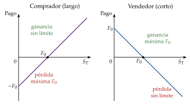
Fuente: elaboración propia a partir de Hull (2022, cap. 1).
I.4. Estrategias: cobertura, especulación y arbitraje
Cobertura: se toma en el futuro la posición contraria a la que se tiene (o se va a tener) en el subyacente, para reducir el riesgo de una variación desfavorable de su precio. Los coberturistas son los participantes que usan así los derivados:
quien va a comprar una cartera de renta fija, de acciones o de divisas teme una bajada de los tipos de interés (que sube el precio de los bonos), una subida de las cotizaciones o una apreciación de la divisa: se cubre comprando futuros (posición larga);
quien va a vender esa cartera teme lo contrario: se cubre vendiendo futuros (posición corta).
Cobertura imperfecta: el contrato normalizado rara vez coincide con el activo, el plazo o la cantidad que se quiere cubrir, y queda el riesgo de base, el de que cambie la diferencia entre el precio de contado y el del futuro (la base, \(S_t-F_t\)). Por eso se elige el número de contratos que minimiza la varianza de la posición cubierta: si \(\Delta S\) y \(\Delta F\) son las variaciones de los precios de contado y del futuro, la ratio de cobertura de mínima varianza es la pendiente de la regresión de \(\Delta S\) sobre \(\Delta F\), \[\tag{3} h^{*}=\mathrm{corr}(\Delta S,\Delta F)\,\frac{\sigma_{\Delta S}}{\sigma_{\Delta F}},\] y el número de contratos es \(h^{*}\) por las unidades que se quieren cubrir, entre las unidades de cada contrato.
Especulación: los especuladores toman una posición abierta según lo que esperan, larga si creen que el precio subirá y corta si creen que bajará. Como al firmar no se paga nada, salvo las garantías, el apalancamiento multiplica las ganancias y las pérdidas. Y son necesarios: asumen el riesgo del que se quieren librar los coberturistas.
Arbitraje: los arbitrajistas compran lo barato y venden lo caro a la vez cuando el precio del futuro no es coherente con el de contado, y ganan sin riesgo. Al hacerlo corrigen la incoherencia: esa operación es la que fija el precio de los futuros (I.5).
I.5. Valoración: la ausencia de arbitraje
La valoración responde a 3 preguntas: cuánto debe valer hoy el futuro respecto del contado (la paridad spot-forward); si ese precio predice el de contado futuro (expectativas, normal backwardation y contango); y un caso conocido, el de las divisas (la paridad cubierta de intereses).
Una explicación breve de la paridad spot-forward, con ejemplos: https://en.
I.5.1. La paridad spot-forward
a) Idea
Hay 2 formas de tener el subyacente en \(T\): comprarlo hoy y guardarlo, o pactar hoy su compra a plazo. Si costaran distinto, alguien ganaría sin riesgo haciendo una y deshaciendo la otra. La condición de que no sea así da el precio del futuro.
b) Modelo
i) Supuestos
No hay costes de transacción ni impuestos.
Se puede prestar y pedir prestado al tipo sin riesgo \(r\), y vender en corto.
No hay riesgo de contrapartida, y el subyacente, de momento, no da rentas ni cuesta guardarlo.
ii) Desarrollo
La estrategia de arbitraje (cash and carry): hoy se pide prestado \(S_0\), se compra el subyacente y se vende un forward a \(F_0\); la operación no cuesta nada. En \(T\) se entrega el activo, se cobra \(F_0\) y se devuelve el préstamo con sus intereses, \(S_0e^{rT}\). El beneficio, \(F_0-S_0e^{rT}\), es seguro y no ha exigido dinero propio: tiene que ser cero.10 Si fuera negativo, se haría la operación inversa. Por tanto:
\[F_0=S_0\,e^{rT}\tag{4}\]
Ejemplo: con \(S_0=100\), \(r=5\) % y \(T=1\) año, \(F_0=100\,e^{0{,}05}\approx105{,}13\). Si el mercado cotizara el forward a 108, se vendería a plazo, se compraría al contado con un préstamo de 100 y en un año se ganarían \(108-105{,}13=2{,}87\) sin riesgo.
iii) Implicaciones
El precio del futuro no depende de lo que el mercado espere que valga el subyacente en \(T\) ni de la aversión al riesgo: solo del precio de hoy y del coste de mantenerlo. «Lo que se gana en los columpios se pierde en los tiovivos»: quien compra a plazo se ahorra los intereses de pagar hoy, pero los paga dentro del precio \(F_0\).
Convergencia: según se acerca el vencimiento, cuando \(t\to T\), \(F_t\to S_t\), y en \(T\), \(F_T=S_T\).
Valor de un contrato ya firmado: un forward vale cero al firmarse, pero después no. Si se firmó a un precio de entrega \(K\) y hoy el precio a plazo para la misma fecha es \(F_0\), la posición larga vale \(f=(F_0-K)\,e^{-rT}\).
c) Extensiones
Con rentas y costes: lo que se gana por tener el activo (dividendos, cupones, intereses en otra moneda) abarata el futuro, y lo que cuesta tenerlo (almacenarlo) lo encarece:
con rentas conocidas de valor actual \(I\) (una acción que paga un dividendo o un bono con cupón), \(F_0=(S_0-I)\,e^{rT}\);
con un rendimiento continuo \(q\) (la rentabilidad por dividendo de un índice bursátil), \(F_0=S_0\,e^{(r-q)T}\);
en las materias primas, con un coste de almacenamiento \(u\) y un rendimiento de conveniencia \(y\), lo que se gana por tener el activo en la mano en momentos de escasez: \[\tag{5} F_0=S_0\,e^{(r+u-y)T},\] donde \(r+u-y\) es el coste de mantenimiento (cost of carry).
En divisas: el subyacente rinde el tipo de interés extranjero, \(q=i^{*}\), y la paridad es la paridad cubierta de intereses (I.5.3).
Con expectativas: la paridad no dice si \(F_0\) predice el precio futuro; esa es la pregunta de la normal backwardation y el contango (I.5.2).
d) Evidencia empírica
En los mercados financieros líquidos la paridad se cumple casi siempre, porque arbitrar es barato. En las materias primas, con almacenamiento caro o imposible, solo se cumple como desigualdad: el arbitraje de comprar barato al contado y guardarlo exige tener dónde guardar. El 20 de abril de 2020 el futuro de mayo del WTI cerró a \(-37{,}63\) dólares por barril: el coste de almacenar, \(u\), se había disparado.
e) Valoración
Es un resultado muy general, porque solo exige que no haya arbitraje. Pero fija el precio del futuro respecto del contado y no dice nada de si \(F_0\) predice bien el precio que habrá en \(T\). Esa es la pregunta del apartado siguiente.
I.5.2. Expectativas, normal backwardation y contango
La pregunta: ¿es el precio del futuro un predictor insesgado del precio de contado que se espera para el vencimiento? Hay 3 respuestas:
la hipótesis de expectativas: sí, \(F_0=\mathbb{E}_0[S_T]\), como si los participantes fueran neutrales al riesgo;
la normal backwardation de Keynes (1930) y Hicks (1939): en la mayoría de las materias primas, los coberturistas naturales son los productores (el agricultor), que venden a plazo. Para que los especuladores tomen la posición larga, tienen que esperar ganar: el precio a plazo tiene que estar por debajo del esperado, \(F_0<\mathbb{E}_0[S_T]\), y \(F_t\) sube hacia \(S_T\) mientras se acerca el vencimiento. La diferencia es la prima que los productores pagan por quitarse el riesgo;
el contango: si los coberturistas naturales son los compradores (el molinero, que quiere asegurarse lo que pagará por el trigo), son ellos los que pagan la prima: \(F_0>\mathbb{E}_0[S_T]\), y \(F_t\) baja hacia \(S_T\).
Interpretación gráfica: en los 3 casos, el precio del futuro converge al de contado en el vencimiento; con normal backwardation sube hacia él y con contango baja (gráfico 2). En la normal backwardation gana en promedio el especulador comprador, y en el contango, el vendedor.
Con el riesgo sistemático: la prima depende de la beta del subyacente. Si \(k\) es la rentabilidad que se exige al subyacente, \(F_0=\mathbb{E}_0[S_T]\,e^{(r-k)T}\), y con la recta del mercado de títulos del CAPM, \(k-r=\beta\lambda_M\) [ver tema 3.B.23]: con beta positiva hay normal backwardation; con beta nula se cumplen las expectativas, y con beta negativa hay contango (desarrollo en el anexo C).
Aviso de terminología: en el mercado, contango y backwardation se usan casi siempre para comparar el futuro con el precio de hoy, no con el esperado. Hay contango si \(F_0>S_0\) (curva de futuros creciente, lo normal si guardar el activo cuesta, \(r+u>y\)) y backwardation si \(F_0<S_0\) (curva decreciente, cuando hay escasez y el rendimiento de conveniencia es alto, \(y>r+u\)). Hay que decir siempre en cuál de los 2 sentidos se usa: en abril de 2020 el WTI estaba en un contango extremo en el sentido del mercado.
Evidencia: comprar futuros de materias primas ha dado en promedio una rentabilidad por encima del tipo sin riesgo, como predice la normal backwardation, aunque la prima no es estable entre productos ni entre periodos. En divisas, el tipo a plazo es un predictor sesgado del tipo de contado futuro, el sesgo del forward [ver tema 3.B.13]. Es la misma pregunta que la teoría de las expectativas de la estructura temporal de los tipos de interés [ver tema 3.B.24].
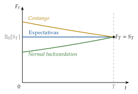
Fuente: elaboración propia a partir de Bodie, Kane y Marcus (2021, cap. 22).
I.5.3. Un caso: la paridad cubierta de intereses
Con una divisa como subyacente, \(S_0\equiv E_0\) es el tipo de cambio de contado (euros por dólar), y el activo rinde el tipo de interés extranjero, \(i^{*}\). Un inversor con 1 euro tiene 2 opciones a un año:
invertirlo en euros y obtener \(1+i\);
cambiarlo hoy por \(1/S_0\) dólares, invertirlos al tipo \(i^{*}\) y vender hoy a plazo, al precio \(F_0\), los \((1+i^{*})/S_0\) dólares que tendrá: obtendrá \((1+i^{*})\,F_0/S_0\) euros, sin riesgo de cambio.
Sin arbitraje, las 2 rinden lo mismo. Es la paridad cubierta de intereses (PCI), que ya formuló Keynes (1923): \[\tag{6} 1+i=(1+i^{*})\,\frac{F_0}{S_0}\qquad\Longleftrightarrow\qquad F_0=S_0\,e^{(i-i^{*})T}\ \text{en tiempo continuo},\] que es la paridad spot-forward con \(r=i\) y \(q=i^{*}\): la divisa con el tipo más alto cotiza con descuento a plazo [ver tema 3.B.13] [ver tema 3.B.14].
La PCI se cumplía casi exactamente hasta 2008; desde entonces hay desviaciones persistentes (la base de los swaps de divisas), por los límites al balance de los bancos que arbitran y la demanda de dólares. La paridad descubierta y la paradoja del margen forward, que no son de arbitraje sino de expectativas, se estudian con los tipos de cambio [ver tema 3.B.13] [ver tema 3.B.14].
Recapitulación del bloque I: un futuro obliga a las 2 partes y su pago es lineal, \(S_T-F_0\); la cámara, los márgenes y la liquidación diaria eliminan casi todo el riesgo de contrapartida; y su precio lo fija el arbitraje, \(F_0=S_0e^{rT}\) (o \(S_0e^{(r+u-y)T}\)), no las expectativas, que solo explican la prima entre \(F_0\) y \(\mathbb{E}_0[S_T]\).
Nexo: pero el futuro es simétrico: protege de lo malo a costa de renunciar a lo bueno. ¿Y si se quisiera quedarse solo con la parte buena? Eso es una opción.
II. Mercados de opciones
En el cante (11′30″): definición y tipos, 1′30″: de palabra, los 6 elementos y los 3 criterios principales (call o put, europea o americana, organizado u OTC). Pago y beneficio, 1′30″: el gráfico 3, al menos la call y la put compradas, con «el que paga, manda». Estrategias, 1′30″: los 3 perfiles pequeños del gráfico 4 a mano alzada. Valoración, 7′: la (9), con las 2 carteras debajo (1′30″); la tabla 4 en versión mínima, con 5 filas y la call y la put europeas (1′); el árbol binomial (gráfico 7) con \(\Delta=1/3\) y \(\pi=2/3\), contado casi de palabra (2′); la (14) y, de palabra, \(N(d_2)\), \(N(d_1)\), la sonrisa de volatilidad y el VIX (2′); y las opciones reales, de palabra (0′30″). El gráfico 6, solo si sobra tiempo. Los tipos de opciones exóticas, las cotas, las extensiones y los anexos de estrategias y de griegas son de profundización.
Conclusión anticipada: la opción separa el lado bueno del malo a cambio de una prima. Esa prima se calcula sin conocer las probabilidades reales ni la actitud ante el riesgo del inversor: basta con replicar la opción con el subyacente y un bono. Depende de la volatilidad, no de lo que cada uno espere.
Nexo: una vez visto el derivado que obliga a las 2 partes, pasamos al que solo obliga a una.
Una introducción a las opciones en vídeo: https://youtu.
II.1. Definición
Una opción es un contrato que da a su comprador el derecho, pero no la obligación, de comprar o de vender un subyacente a un precio y en una fecha fijados hoy. Tiene 6 elementos, los 5 del futuro con un cambio y una prima:
un contrato;
un derecho para el comprador (o tenedor), pero no una obligación: el de comprar (una opción de compra o call) o el de vender (una opción de venta o put); el vendedor (o emisor) asume la obligación de vender, en la call, o de comprar, en la put, si el comprador ejerce;
uno o varios subyacentes;
un precio de ejercicio, \(K\);
una fecha de vencimiento, \(T\), en la que (o hasta la que) se puede ejercer;
una prima, \(c\) o \(p\), que el comprador paga hoy al vendedor por el derecho: es el precio de la opción.
El primer mercado organizado de opciones normalizadas sobre acciones fue el Chicago Board Options Exchange, en 1973; en España se negocian en MEFF, sobre todo opciones sobre acciones y sobre el IBEX 35.
II.2. Tipos
Las opciones se clasifican con varios criterios (tabla 2). Los 3 primeros son los que importan en el cante:
Según el derecho: la call da el derecho a comprar, y la put, a vender.
Según cuándo se puede ejercer: la europea, solo en la fecha de vencimiento; la americana, en cualquier momento hasta ella; y la bermuda, en algunas fechas prefijadas antes del vencimiento.
Según el mercado: en un mercado organizado, normalizadas y con cámara; u OTC, a medida, con las mismas ventajas e inconvenientes que en los futuros (tabla 1).
Según el estado en que se encuentra, una opción está dentro de dinero (in the money) si ejercerla ahora daría un pago positivo (\(S_t>K\) en una call, \(S_t<K\) en una put), en el dinero (at the money) si \(S_t=K\) y fuera de dinero (out of the money) en el resto de los casos.11
Estándar o exóticas: en una opción estándar (plain vanilla) el pago depende solo del precio del subyacente al ejercer y de \(K\). Las exóticas cambian esa regla:
las que dependen de la trayectoria del subyacente: las asiáticas comparan \(K\) con el precio medio durante la vida de la opción, y las barrera se activan o se extinguen si el subyacente toca un nivel;
las digitales o binarias pagan una cantidad fija si terminan dentro de dinero (una call digital, si \(S_T>K\); una put digital, si \(S_T<K\)), y nada si no;
y las de varios subyacentes: sobre una cesta, sobre el que mejor evolucione (best of) o sobre el que peor (worst of).
Sobre tipos de interés: un cap es una serie de calls sobre el tipo de interés que pone un techo al tipo que paga quien se endeuda a tipo variable; un floor, una serie de puts que pone un suelo al que cobra un prestamista; y un collar combina la compra de un cap y la venta de un floor, de modo que el tipo que se paga queda en una banda y la prima del floor abarata la del cap.12
Warrants: opciones que emite una entidad (un banco o la propia empresa) y que el inversor solo puede comprar; suelen tener plazos más largos que las opciones cotizadas y, si las emite la propia empresa sobre sus acciones, son dilutivas, porque al ejercerlas se emiten acciones nuevas y la empresa cobra \(K\) [ver tema 3.B.23].13
Opciones incorporadas a otros activos: muchos bonos llevan una opción dentro, como los amortizables anticipadamente por el emisor (callable), los que el inversor puede devolver (putable) o los convertibles en acciones [ver tema 3.B.24].
| Criterio | Tipos |
|---|---|
| Derecho | Call (comprar) y put (vender) |
| Momento del ejercicio | Europea (al vencimiento), americana (hasta el vencimiento) y bermuda (en fechas prefijadas) |
| Mercado | Organizado (normalizada, con cámara) u OTC (a medida) |
| Estado | Dentro, en o fuera de dinero |
| Regla de pago | Estándar (plain vanilla) o exótica (asiática, barrera, digital, sobre varios subyacentes) |
| Subyacente | Acciones, índices, divisas, futuros o tipos de interés (caps, floors y collars) |
| Emisor | Opciones negociadas o warrants emitidos por una entidad |
Fuente: elaboración propia a partir de Hull (2022, caps. 10 y 26).
II.3. Pago de la opción a vencimiento y beneficio
Al vencimiento, el comprador solo ejerce si le conviene. Por eso los pagos son no lineales: \[\tag{7} \text{Pago de la call comprada}=\max(S_T-K,\,0),\] \[\tag{8} \text{Pago de la put comprada}=\max(K-S_T,\,0).\]
El beneficio del comprador es el pago menos la prima (\(c\) o \(p\); para ser exactos, capitalizada hasta \(T\)). El vendedor tiene el pago y el beneficio opuestos: a vencimiento, lo que gana una parte lo pierde la otra, contando la prima (gráfico 3).
El comprador de una call pierde como mucho la prima y su ganancia no tiene límite; gana dinero si \(S_T>K+c\).
El comprador de una put pierde como mucho la prima y gana como mucho \(K-p\), si el subyacente llega a cero; gana dinero si \(S_T<K-p\).
El vendedor de una call gana como mucho la prima y su pérdida no tiene límite; el de una put gana como mucho la prima y pierde como mucho \(K-p\).
«El que paga, manda»: el comprador paga la prima y decide si ejerce; el vendedor la cobra y acata lo que decida el comprador. La asimetría no hace mejor negocio al comprador: la prima es justo lo que compensa al vendedor por el riesgo que asume.14
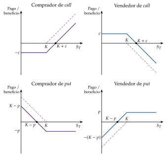
Fuente: elaboración propia a partir de Hull (2022, cap. 10). En gris discontinuo, el pago; en color, el beneficio, desplazado por la prima.
II.4. Estrategias
Combinando opciones entre sí y con el subyacente se puede fabricar casi cualquier perfil de pagos: es la ingeniería financiera. En la exposición basta con una estrategia de cada familia; el resto, con sus perfiles, en el anexo D.
II.4.1. Estrategias de especulación
Simples: comprar una call o vender una put si se espera que el subyacente suba; comprar una put o vender una call si se espera que baje (gráfico 3). Comprar limita la pérdida a la prima; vender la deja abierta.
Combinaciones: calls y puts sobre el mismo subyacente y con el mismo vencimiento, compradas o vendidas a la vez. Son apuestas sobre la volatilidad, no sobre la dirección. La más conocida es el cono (straddle): comprar una call y una put con el mismo \(K\). Gana si el precio se aleja mucho de \(K\) en cualquier sentido y pierde las 2 primas si se queda cerca (panel izquierdo del gráfico 4). Venderlo es apostar por la calma.
Diferenciales (spreads): comprar y vender a la vez opciones del mismo tipo con distinto \(K\). Sirven cuando la expectativa es moderada: limitan la pérdida a cambio de limitar la ganancia. En el diferencial alcista (bull spread) se compra una call de \(K_1\) y se vende otra de \(K_2>K_1\): la prima que se cobra abarata la estrategia y, a cambio, la ganancia se detiene en \(K_2\) (panel central).
II.4.2. Estrategias de cobertura
Como con los futuros, quien va a comprar una cartera de renta fija, de acciones o de divisas se cubre de una subida de su precio comprando una call, y quien va a venderla, de una bajada comprando una put.
La cobertura más conocida es la put protectora (protective put): tener el activo y comprar una put sobre él. Al vencimiento la cartera vale \(S_T+\max(K-S_T,0)=\max(S_T,K)\): nunca menos de \(K\), y todo lo que suba el activo (panel derecho). Es un seguro con franquicia: la prima es lo que cuesta, y \(S_0-K\), la parte de la caída que no se cubre.
La inversa es la call cubierta: tener el activo y vender una call; se cobra la prima a cambio de renunciar a lo que suba por encima de \(K\). Juntas forman un collar: comprar la put y vender la call acota el valor de la cartera entre 2 precios casi sin coste.
A diferencia del futuro, que fija el precio y elimina a la vez las pérdidas y las ganancias, la opción elimina solo las pérdidas, y por eso cuesta una prima.15 La put protectora lleva directamente a la paridad put-call.
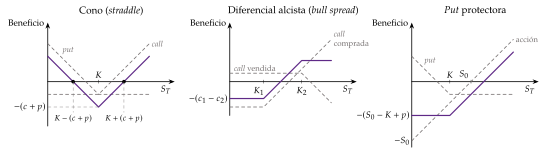
Fuente: elaboración propia a partir de Hull (2022, cap. 12). En gris discontinuo, las posiciones que se combinan; en color, el beneficio de la estrategia.
II.5. Valoración
La valoración de las opciones avanza en 3 pasos: lo que el arbitraje dice sin ningún modelo (la paridad put-call y las cotas), de qué depende la prima (valor intrínseco y temporal) y cuánto vale con un modelo del subyacente (el binomial y el de Black y Scholes).
II.5.1. Ausencia de arbitraje: la paridad put-call
La paridad put-call, explicada con sus 2 carteras: https://youtu.
a) Idea
Sin saber aún cuánto vale una opción, el arbitraje ya dice cuánto vale una put si se conoce la call con el mismo subyacente, el mismo \(K\) y el mismo \(T\): 2 carteras que pagan lo mismo en cualquier estado tienen que costar lo mismo hoy.
b) Modelo
i) Supuestos
Opciones europeas sobre un subyacente sin dividendos, con el mismo \(K\) y el mismo \(T\).
Mercados sin costes de transacción, en los que se presta y se pide prestado al tipo \(r\).
ii) Desarrollo
Se comparan 2 carteras (tabla 3 y gráfico 5):
la call fiduciaria (fiduciary call): una call y un bono cupón cero sin riesgo que paga \(K\) en \(T\), que hoy cuesta \(Ke^{-rT}\);
la put protectora: una put y una unidad del subyacente.
Las 2 valen \(\max(S_T,K)\) en \(T\), suba o baje el subyacente: si \(S_T<K\), la primera vale el bono, \(K\), y la segunda se vende a \(K\) con la put; si \(S_T\geq K\), las 2 valen \(S_T\). Si pagan lo mismo en todos los estados, tienen que costar lo mismo hoy:
\[c+K\,e^{-rT}=p+S_0\tag{9}\]
Si la igualdad no se cumple, se compra la cartera barata y se vende la cara, y se gana sin riesgo. Ejemplo: una acción sin dividendos cotiza a 105, y las opciones a un año en el dinero (\(K=105\)) cotizan a \(c=9\) y \(p=2\), con un tipo del 5 %. La paridad exige \(c-p=S_0-K/1{,}05=105-100=5\), pero en el mercado \(c-p=7\): la call está cara respecto de la put. Se vende la call, se compran la put y la acción y se pide prestado el valor actual de \(K\); hoy se ingresan 2, y en \(T\) la posición vale cero en cualquier caso.16
iii) Implicaciones
Basta con valorar la call: la put sale de la paridad.
Despejando, cualquiera de los 4 activos se replica con los otros 3: por ejemplo, \(S_0=c-p+Ke^{-rT}\) es una acción sintética. Es la base de las opciones sintéticas (anexo D).
La paridad no dice cuánto vale cada opción, sino cuánto valen una respecto de la otra.
c) Extensiones
Con dividendos de valor actual \(D\): \(c+D+Ke^{-rT}=p+S_0\). Los dividendos, que cobra quien tiene la acción y no quien tiene la opción, abaratan la call y encarecen la put.
Opciones americanas: la igualdad se convierte en las desigualdades \(S_0-K\leq C-P\leq S_0-Ke^{-rT}\), porque la put americana puede ejercerse antes y el arbitraje deja de ser seguro.
d) Evidencia empírica
En las opciones sobre índices muy líquidos las desviaciones son pequeñas y se explican por los costes de transacción y por las restricciones a la venta en corto, que encarecen las puts cuando es difícil vender el subyacente. Las desviaciones grandes y persistentes son raras: cuando aparecen, señalan precisamente esas fricciones.
e) Valoración
Es un resultado muy general, porque no supone nada sobre cómo se mueve el precio. Pero no da el precio de la opción: para eso hace falta saber de qué depende y un modelo de cómo puede evolucionar el subyacente.
| Posición | \(S_T<K\) | \(S_T\geq K\) |
|---|---|---|
| Comprar una call | \(0\) | \(S_T-K\) |
| Comprar un bono que paga \(K\) | \(K\) | \(K\) |
| Call fiduciaria | \(\boldsymbol{K}\) | \(\boldsymbol{S_T}\) |
| Comprar una put | \(K-S_T\) | \(0\) |
| Comprar la acción | \(S_T\) | \(S_T\) |
| Put protectora | \(\boldsymbol{K}\) | \(\boldsymbol{S_T}\) |
Fuente: elaboración propia a partir de Bodie, Kane y Marcus (2021, cap. 20). En fondo salvia, el pago de cada cartera: el mismo en los 2 estados.
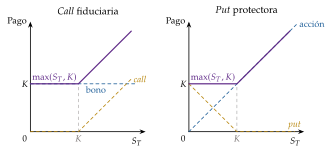
Fuente: elaboración propia a partir de Bodie, Kane y Marcus (2021, cap. 20).
Para cantar la paridad sin perderse: se escriben las 2 carteras en 2 columnas, se dibujan sus pagos por partes (en la izquierda, el bono como una recta horizontal en \(K\) y la call encima; en la derecha, la acción como la diagonal y la put encima) y se señala que los 2 gráficos acaban iguales. La fórmula se lee de izquierda a derecha: «lo que cuesta una cartera es lo que cuesta la otra».
II.5.2. Valor intrínseco y valor temporal
La paridad relaciona la call con la put, pero no dice qué da valor a cada una. La prima tiene 2 partes:
el valor intrínseco, lo que se obtendría ejerciendo ya: \(\max(S_0-K,0)\) en una call y \(\max(K-S_0,0)\) en una put. Es el pago que hemos dibujado al vencimiento;
el valor temporal (o extrínseco), el resto: lo que vale la posibilidad de que el subyacente se mueva a favor antes del vencimiento. Una call fuera de dinero no vale nada si se ejerce hoy, pero tiene valor porque puede acabar dentro de dinero.
El valor temporal depende de:
el plazo hasta el vencimiento: cuanto más largo, más posibilidades de que la opción acabe dentro de dinero;
la volatilidad del subyacente: cuanto mayor, más posibilidades de un movimiento favorable, y la pérdida por uno desfavorable está limitada a la prima;
el tipo de interés: cuanto mayor, menor es el valor actual del precio de ejercicio, así que sube la call (que lo paga) y baja la put (que lo cobra); afecta en sentido contrario a \(K\);
los dividendos u otras rentas del subyacente: al pagarse, el precio de la acción baja en esa cuantía, así que reducen el valor de la call y aumentan el de la put; afectan como una bajada del precio del subyacente;
la distancia entre \(S_0\) y \(K\): el valor temporal es máximo en el dinero y se reduce cuanto más dentro o más fuera de dinero está la opción. Al vencimiento se anula.
Cotas: sin arbitraje, una call europea sobre un activo sin dividendos vale entre \(\max(S_0-Ke^{-rT},0)\) y \(S_0\) (nadie paga por el derecho a comprar un activo más de lo que cuesta el activo), y una put, entre \(\max(Ke^{-rT}-S_0,0)\) y \(Ke^{-rT}\).
Por eso una call americana sobre un activo sin dividendos nunca se ejerce antes del vencimiento: vale al menos \(S_0-Ke^{-rT}\), más de lo que daría ejercerla, \(S_0-K\); así que vale lo mismo que la europea, \(C=c\).
En cambio, una put europea muy dentro de dinero puede valer menos que su valor intrínseco: su valor temporal es negativo.
Interpretación gráfica: la prima de la call es una curva convexa en \(S_0\) que está siempre por encima de su cota inferior y se acerca a ella cuando la opción está muy dentro o muy fuera de dinero; la distancia vertical al valor intrínseco es el valor temporal, máximo en \(K\) (gráfico 6).
Los signos de todos los efectos se resumen en la tabla 4; la sensibilidad a cada variable es una «griega» (anexo E).
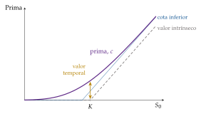
Fuente: elaboración propia con la fórmula de Black y Scholes (1973): \(K=100\), \(r=5\) %, \(\sigma=20\) % y \(T=1\) año.
| Variable | Call europea | Put europea | Call americana | Put americana | Griega |
|---|---|---|---|---|---|
| Precio del subyacente, \(S_0\) | \(+\) | \(-\) | \(+\) | \(-\) | \(\Delta\) (y \(\Gamma\)) |
| Precio de ejercicio, \(K\) | \(-\) | \(+\) | \(-\) | \(+\) | — |
| Plazo, \(T\) | ?a | ?b | \(+\) | \(+\) | \(\Theta\) |
| Volatilidad, \(\sigma\) | \(+\) | \(+\) | \(+\) | \(+\) | \(\mathcal{V}\) |
| Tipo sin riesgo, \(r\) | \(+\) | \(-\) | \(+\) | \(-\) | \(\rho\) |
| Dividendos, \(D\) | \(-\) | \(+\) | \(-\) | \(+\) | — |
Fuente: Hull (2022, tabla 11.1). a) Sin dividendos, \(+\): la call europea vale lo mismo que la americana; con dividendos, una call europea a más plazo puede valer menos si antes de su vencimiento se paga un dividendo grande. b) Más plazo da más volatilidad, pero retrasa el cobro de \(K\), cuyo valor actual baja. En las americanas, más plazo siempre suma, porque el tenedor puede ejercer cuando le convenga.
II.5.3. El modelo binomial
El modelo binomial de un periodo, paso a paso: https://youtu.
a) Idea
La fórmula exacta exige matemáticas de tiempo continuo, pero la idea se ve con el caso más simple: un periodo y 2 estados. Lo propuso Sharpe (1978)17 en su manual, y lo desarrollaron Cox, Ross y Rubinstein (1979) y Rendleman y Bartter (1979).
La clave: con el subyacente y un bono se puede fabricar una cartera que paga lo mismo que la opción en los 2 estados, así que la opción vale lo que cuesta esa cartera. Su precio no depende de la probabilidad real de cada estado ni de la aversión al riesgo de nadie.
b) Modelo
i) Supuestos
En un periodo, el subyacente, que no paga dividendos, pasa de \(S_0\) a \(uS_0\) o a \(dS_0\), con \(d<1+r<u\) (si no, habría arbitraje con el bono).
Se presta y se pide prestado al tipo \(r\) del periodo, sin costes de transacción.
ii) Desarrollo
Se busca la cartera de \(\Delta\) acciones y una deuda \(B\) que paga lo mismo que la call en los 2 estados, \(c_u\) y \(c_d\): \[\tag{10} \Delta\,uS_0-(1+r)B=c_u,\qquad \Delta\,dS_0-(1+r)B=c_d\quad\Longrightarrow\quad \Delta=\frac{c_u-c_d}{(u-d)\,S_0}.\] Su coste, \(\Delta S_0-B\), es el precio de la opción. Reordenando (anexo A): \[\tag{11} c=\frac{\pi\,c_u+(1-\pi)\,c_d}{1+r},\qquad \pi=\frac{(1+r)-d}{u-d}.\]
Ejemplo (gráfico 7): una acción vale hoy \(S_0=100\) y en un año puede subir a 125 (\(u=1{,}25\)) o bajar a 80 (\(d=0{,}8\)); una call a un año tiene \(K=110\), y el tipo es \(r=10\) %, en capitalización simple. Al vencimiento la call vale 15 o 0.
Con la réplica: \(\Delta=15/45=1/3\) de acción; la deuda se elige para que la cartera valga cero en el estado malo, \(B=(80/3)/1{,}1=24{,}24\). La cartera cuesta \(100/3-24{,}24=9{,}09\), y eso vale la call.
Con la fórmula: \(\pi=(1{,}1-0{,}8)/0{,}45=2/3\) y \(c=(2/3\cdot15+1/3\cdot0)/1{,}1\approx9{,}09\).
Y la put con el mismo \(K\), por la paridad: \(p=c+K/(1+r)-S_0=9{,}09+100-100=9{,}09\); con el árbol, \((1/3\cdot30)/1{,}1=9{,}09\).
iii) Implicaciones
La probabilidad real no interviene: da igual que la acción suba con una probabilidad del 50 % o del 90 %; la call vale 9,09 porque se puede replicar. \(\pi\) no es la probabilidad real, sino la que haría que la acción rindiera en promedio el tipo sin riesgo, \(\pi uS_0+(1-\pi)dS_0=(1+r)S_0\): la probabilidad neutral al riesgo. Valorar es calcular el pago esperado con ella y descontarlo al tipo sin riesgo.
La volatilidad entra por \(u\) y \(d\): cuanto más separados, más vale la opción. En la versión de Cox, Ross y Rubinstein (1979), \(u=e^{\sigma\sqrt{\Delta t}}\) y \(d=1/u\); en el ejemplo, \(d=1/u\) y \(\ln1{,}25\approx0{,}223\): una volatilidad anual del 22 %.
\(\Delta\) es la ratio de cobertura: comprar \(\Delta\) acciones por cada call vendida da una cartera sin riesgo (en el ejemplo, vale \(26{,}67\) en los 2 estados).
Es el mismo árbol de 2 ramas, con la misma \(\pi\), que la opción de esperar en la decisión de inversión [ver tema 3.A.34] [ver tema 3.B.2].
c) Extensiones
Varios periodos: el árbol se resuelve hacia atrás, nodo a nodo. En cada nodo se puede comparar el valor de seguir con el de ejercer, así que sirve para las opciones americanas, lo que no hace la fórmula de Black y Scholes.
Del binomial a Black-Scholes: si el plazo se divide en \(n\) periodos cada vez más cortos, con \(u\) y \(d\) ajustados a la volatilidad, el logaritmo del precio final es una suma de muchos saltos independientes y, por el teorema central del límite, tiende a una normal: el precio es lognormal y el valor de la opción converge a la fórmula de Black y Scholes (anexo A).
d) Valoración
Es flexible e intuitivo y es el método de cálculo de las opciones americanas, pero con un periodo los 2 estados son una caricatura, y con muchos exige un ordenador. Una fórmula cerrada sería más útil.
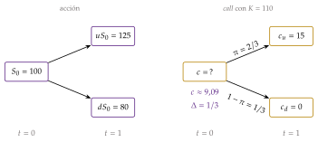
Fuente: elaboración propia a partir de Cox, Ross y Rubinstein (1979): \(S_0=100\), \(u=1{,}25\), \(d=0{,}8\), \(K=110\) y \(r=10\) %.
El binomial se canta casi de palabra: se dibuja el árbol con la acción (100, 125 y 80) y la opción (?, 15 y 0), se dice que con un tercio de acción y un préstamo se fabrica la opción y se escribe solo la (11) con \(\pi=2/3\) y \(c\approx9{,}09\). La frase que hay que decir: «la probabilidad real no aparece».
II.5.4. El modelo de Black y Scholes
a) Idea
b) Modelo
i) Supuestos
El precio del subyacente sigue un movimiento browniano geométrico, \(dS=\mu S\,dt+\sigma S\,dz\): rendimientos instantáneos normales e independientes, con media \(\mu\) y volatilidad \(\sigma\) constantes, y precio futuro lognormal.
El tipo sin riesgo \(r\) es constante, y se presta y se pide prestado sin límite a ese tipo.
La opción es europea y el subyacente no paga dividendos.
Se negocia en tiempo continuo, sin costes de transacción ni impuestos, y se puede vender en corto.
No hay oportunidades de arbitraje.
ii) Desarrollo
Una cartera con una call vendida y \(\Delta=\partial c/\partial S\) acciones no tiene riesgo durante un instante, así que tiene que rendir \(r\). Esa condición da una ecuación en derivadas parciales para el precio \(f(S,t)\) de cualquier derivado sobre \(S\): \[\tag{12} \frac{\partial f}{\partial t}+r\,S\,\frac{\partial f}{\partial S}+\frac{1}{2}\,\sigma^2S^2\,\frac{\partial^2f}{\partial S^2}=r\,f,\] en la que la rentabilidad esperada de la acción, \(\mu\), no aparece. Por eso el precio es el mismo que en un mundo neutral al riesgo: el pago esperado con la medida neutral al riesgo \(\mathbb{Q}\), en la que el subyacente rinde en promedio \(r\), descontado al tipo sin riesgo (anexo A): \[\tag{13} c=e^{-rT}\,\mathbb{E}^{\mathbb{Q}}\big[\max(S_T-K,0)\big].\]
Con la condición final de la call, \(f(S,T)=\max(S-K,0)\), la solución es la fórmula de Black y Scholes:
\[c=S_0\,N(d_1)-K\,e^{-rT}N(d_2)\tag{14}\]
\[\tag{15} d_1=\frac{\ln(S_0/K)+(r+\sigma^2/2)\,T}{\sigma\sqrt{T}},\qquad d_2=d_1-\sigma\sqrt{T},\] y, por la paridad, \(p=Ke^{-rT}N(-d_2)-S_0N(-d_1)\).
Ejemplo: con \(S_0=K=100\), \(r=5\) %, \(\sigma=20\) % y \(T=1\), \(d_1=0{,}35\) y \(d_2=0{,}15\); \(N(d_1)=0{,}637\) y \(N(d_2)=0{,}560\), así que \(c=63{,}68-95{,}12\cdot0{,}560\approx10{,}45\) y \(p\approx5{,}57\).
iii) Implicaciones
Cómo se lee: la call vale lo que se espera recibir (la acción, si se ejerce) menos lo que se espera pagar (\(K\), si se ejerce), en valor actual y con probabilidades neutrales al riesgo:
\(N(d_2)\) es la probabilidad neutral al riesgo de que la opción se ejerza, \(\mathbb{Q}(S_T>K)\);
\(N(d_1)\) es la delta de la call, \(\Delta=\partial c/\partial S_0\): las acciones que hay que tener por cada call para replicarla.
Casos límite: si la opción está muy dentro de dinero, \(N(d_1)\) y \(N(d_2)\) tienden a 1 y \(c\to S_0-Ke^{-rT}\), su cota inferior (la put no vale nada); si está muy fuera, \(c\to0\).
De qué depende: de 5 variables, \(c=c(S_0,K,T,r,\sigma)\), todas observables salvo la volatilidad, con los signos de la tabla 4; no depende de \(\mu\) ni de la aversión al riesgo, que ya están en \(S_0\). Las sensibilidades a cada variable son las griegas, \(\Delta\), \(\Gamma\), \(\mathcal{V}\), \(\Theta\) y \(\rho\), con las que se gestionan las carteras de opciones (anexo E) [ver tema 3.B.26].
Volatilidad implícita: como todo lo demás se observa, del precio de mercado de una opción se puede despejar la \(\sigma\) que lo justifica, y compararla con la volatilidad histórica del subyacente. Los mercados cotizan las opciones en volatilidad, y los índices de volatilidad implícita (el VIX del Cboe sobre el S&P 500, el «índice del miedo», o el VIBEX de BME sobre el IBEX 35, con una media del 15,1 % en 2025) miden la incertidumbre que descuenta el mercado.
c) Extensiones
Con dividendos continuos a la tasa \(q\), basta cambiar \(S_0\) por \(S_0e^{-qT}\); sobre futuros, la fórmula de Black (1976); sobre divisas, con \(q=i^{*}\).
Opciones americanas: no tienen fórmula cerrada (salvo la call sin dividendos, que vale como la europea); se valoran con árboles binomiales.
Más allá de la lognormal: volatilidad estocástica, saltos y volatilidad local; y, para las exóticas, la simulación de Montecarlo, que calcula el pago esperado con \(\mathbb{Q}\) promediando miles de trayectorias simuladas.
d) Evidencia empírica
Ajuste: el modelo da precios cercanos a los de mercado para opciones en el dinero y a corto plazo, y su lógica, la cobertura delta, la usan todos los creadores de mercado. Su adopción fue tan rápida que llegó a hacer que los precios de mercado se parecieran a los de la fórmula.
La sonrisa de volatilidad: si el modelo fuera exacto, la volatilidad implícita sería la misma para todos los \(K\) de un mismo subyacente. Desde el desplome de octubre de 1987 no lo es: en los índices bursátiles, la implícita de las puts fuera de dinero es mucho mayor (una «mueca» o skew), porque el mercado da a las caídas fuertes más probabilidad que la lognormal.
Colas gruesas: los rendimientos tienen más sucesos extremos que una normal, como mostró ya Mandelbrot (1963), y la volatilidad cambia con el tiempo y se agrupa en rachas.
e) Valoración
Sus supuestos no se cumplen, y las 3 críticas clásicas son:
la volatilidad no es constante: se alternan periodos de fuerte volatilidad y de calma, y una opción no vale lo mismo si vence en un periodo agitado;
los rendimientos no son del todo independientes de los pasados: hay inercias (en los tipos de interés) y rebotes (tras una subida fuerte, ventas para recoger beneficios);
no siguen una normal: hay más sucesos extremos (más curtosis) y asimetría hacia las caídas.
Aun así, el mercado lo usa como un lenguaje: cotiza en volatilidad implícita y corrige la fórmula con la sonrisa, porque da una fórmula cerrada y las griegas. Su gran aportación, la valoración por réplica y neutral al riesgo, va más allá de la fórmula. Pero el riesgo de modelo es real: Long-Term Capital Management, el fondo del que eran socios Merton y Scholes, tuvo que ser rescatado por un consorcio de bancos, con la mediación de la Reserva Federal de Nueva York, en septiembre de 1998, cuando sus posiciones apalancadas se movieron todas a la vez en contra.
II.5.5. Las opciones reales
La lógica de las opciones sirve fuera de los mercados financieros. Una opción real es el derecho, y no la obligación, de tomar una decisión sobre un activo real: esperar antes de invertir, ampliar un proyecto, abandonarlo o hacerlo por fases.
La oportunidad de invertir en un proyecto aplazable es una call americana sobre el proyecto: el subyacente \(S_0\) es el valor actual de sus flujos, \(V_0\), y el precio de ejercicio \(K\), la inversión, \(I\). Como toda opción, vale más cuanto mayor es la incertidumbre, y por eso puede convenir esperar aunque el valor actual neto sea positivo [ver tema 3.A.34] [ver tema 3.B.2].
Las acciones de una empresa endeudada son una call sobre sus activos con precio de ejercicio igual a la deuda: valen algo aunque el patrimonio contable sea negativo, y son la base de los modelos de riesgo de crédito y de la valoración de empresas con opciones reales [ver tema 3.B.4].
Recapitulación del bloque II: la opción da un derecho, su pago no es lineal y por eso se paga una prima. Su valor relativo lo fija la paridad put-call, y su valor absoluto, la réplica: en el binomial con 2 estados y en Black y Scholes en tiempo continuo, con un resultado que no depende de las expectativas ni de la aversión al riesgo, sino de la volatilidad.
Nexo: futuros y opciones resuelven un pago en una fecha. ¿Y si se quiere intercambiar una serie de pagos durante años? Con futuros y opciones se construye todo lo demás: un swap es una cadena de forwards.
III. Mercados de swaps
En el cante (8′): III.1, 0′30″: de palabra, «un swap es una cartera de forwards». III.2, 2′30″: el esquema del IRS (figura 2) con el ejemplo del banco (1′); FX swaps y currency swaps, de palabra, con el dato de la Encuesta Trienal (0′30″); permutas de rentabilidad total y Archegos, en una frase (0′15″); CDS con \(s\simeq\lambda(1-R)\) y AIG (0′45″). III.3, 0′15″: de palabra. III.4, 0′45″: cobertura y ventaja comparativa, con la crítica de Turnbull, de palabra. III.5, 1′: \(V_{\mathrm{swap}}=B_{\mathrm{fl}}-B_{\mathrm{fix}}\), que vuelve a la ETTI. III.6, 3′: 3 columnas, «tamaño», «reforma de 2009» y «riesgos», con 2 o 3 palabras en cada una; los gráficos de datos no se dibujan. La caja de las líneas swap de la Reserva Federal, los otros derivados de crédito y los detalles de la regulación son de profundización.
Conclusión anticipada: un swap no es un instrumento nuevo, sino una cartera de forwards: vale cero al firmarse y se valora, como todo lo anterior, por arbitraje. Con los swaps y los derivados de crédito, casi todos OTC, llegamos al mercado que estuvo en el centro de la crisis de 2008 y a la pregunta del final: qué hacen los mercados de derivados por la economía y qué riesgos crean.
Nexo: una vez vistos los derivados con un pago en una fecha, pasamos a los que intercambian una serie de pagos.
III.1. Definición
Un swap o permuta financiera es un contrato por el que 2 partes se comprometen a intercambiar flujos de caja en una serie de fechas, calculados sobre un nominal con reglas fijadas hoy (un tipo fijo contra uno variable, una moneda contra otra). Tiene 3 elementos:
un contrato;
un intercambio de flujos de caja con una regla fijada hoy;
unas fechas de liquidación, hasta un vencimiento.
Cada intercambio es un forward: el swap es un forward multiperiodo o, lo que es lo mismo, una cartera de forwards con distintos vencimientos. Así, cada parte transforma una corriente de pagos en otra que se ajusta mejor a su perfil de riesgo: un pasivo a tipo variable en uno a tipo fijo, una deuda en dólares en una en euros.
Se negocian OTC, con el contrato marco de la ISDA (International Swaps and Derivatives Association). Aparecieron a principios de los años 80, con la internacionalización de las finanzas y la volatilidad de tipos de interés y de cambio que siguió al fin de Bretton Woods, y hoy son los derivados más negociados: los swaps de tipos de interés suman 545 billones de dólares de nominal, casi dos terceras partes de todos los derivados OTC.
III.2. Tipos
Según lo que se intercambia, hay 5 grandes familias:
permutas de tipos de interés (interest rate swaps, IRS), en una sola moneda;
swaps de divisas a plazo (FX swaps): una compraventa de divisas al contado y la inversa a plazo;
permutas de divisas (currency swaps): intercambian principal e intereses en 2 monedas;
permutas de rentabilidad total y de acciones (total return y equity swaps);
permutas de incumplimiento crediticio (credit default swaps, CDS), que son derivados de crédito.
III.2.1. Permutas de tipos de interés
En una permuta de tipos de interés (IRS) las 2 partes intercambian intereses en la misma moneda sobre un nominal \(\mathrm{VN}\) que no se intercambia; es el swap más importante por volumen. Hay 2 subtipos:
el plain vanilla, fijo contra variable: una parte paga un tipo fijo, el tipo swap \(R_s\), y la otra el Euríbor (o el €STR, en los overnight index swaps, OIS);
el de base (basis swap), variable contra variable (por ejemplo, el Euríbor a 3 meses contra el de 6).
Ejemplo de cobertura: un banco tiene préstamos hipotecarios a tipo variable (Euríbor más un diferencial) y se financia con depósitos a tipo fijo. Si el Euríbor baja, sus ingresos caen y sus costes no. Para cubrirse entra en un IRS en el que paga variable y recibe fijo: si el Euríbor baja, paga menos en el swap, y lo que pierde en el balance lo gana en la permuta (figura 2).
Su contraparte, que paga fijo y recibe variable, puede ser una empresa con un préstamo a tipo variable que quiere fijar su coste. Cada una se cubre de un riesgo distinto: el banco, de las bajadas de tipos, y la empresa, de las subidas.
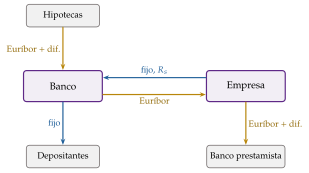
Fuente: elaboración propia a partir de Hull (2022, cap. 7).
III.2.2. Swaps de divisas
FX swaps: 2 operaciones de signo contrario entre las mismas partes, una compraventa de divisas al contado y la inversa a plazo, al tipo forward, sin pagos intermedios. Equivalen a un préstamo en una moneda garantizado con un depósito en la otra, y su precio lo da la paridad cubierta de intereses (6). Son el instrumento más negociado del mercado de divisas: 4 billones de dólares diarios en abril de 2025, el 42 % de los 9,5 billones del total [ver tema 3.B.13].
Currency swaps: como los FX swaps, intercambian los principales al principio y al final, pero además cada parte paga durante la vida del contrato los intereses de la moneda que recibió, fijos o variables. Sirven para convertir una deuda en una moneda en una deuda en otra: el Tesoro o una empresa que emite en dólares y quiere pagar en euros, o un organismo multilateral que presta a medio y largo plazo en una moneda y se financia en otra.
Las líneas swap entre bancos centrales. Un banco central puede prestar a otro su moneda con una operación de estructura de FX swap: le entrega dólares a cambio de su moneda al tipo de cambio de contado y se los recompra al mismo tipo al vencimiento, con intereses aparte. El banco central que recibe los dólares los presta a sus bancos y asume su riesgo.
Por qué hacen falta: los bancos de fuera de Estados Unidos tienen muchos activos en dólares, financiados a corto plazo en los mercados mayoristas, sin acceso directo a la Reserva Federal. Cuando esos mercados se cierran, necesitan dólares que su banco central no puede crear.
En marzo de 2020, con la pandemia, la escasez de dólares fuera de Estados Unidos llevó a la Reserva Federal a reactivar sus 5 líneas permanentes (con el BCE y los bancos centrales de Japón, Inglaterra, Canadá y Suiza) y, el 19 de marzo, a abrir otras 9 temporales, entre ellas con Brasil y México. El saldo prestado llegó a unos 450.000 millones de dólares a finales de abril, sobre todo al Banco de Japón y al BCE, y la prima por obtener dólares en el mercado de swaps desapareció en pocas semanas; las tensiones se aliviaron más en los países con líneas permanentes.
Funcionan como un prestamista de última instancia internacional en dólares, más rápido que el FMI, pero solo para quien la Reserva Federal elige [ver tema 3.B.13] [ver tema 3.B.22]. Más información: Banco Central Europeo (2026), https://www.
III.2.3. Permutas de rentabilidad total y de acciones
Una parte paga la rentabilidad total de una acción o de un índice (variación del precio más dividendos) y la otra un tipo variable más un diferencial. Quien recibe la rentabilidad total tiene la exposición económica a las acciones sin comprarlas y sin figurar como accionista.19
III.2.4. Derivados de crédito
Un derivado de crédito transfiere el riesgo de impago de un emisor, la entidad de referencia, sin transferir el bono o el préstamo.
El principal es la permuta de incumplimiento crediticio (credit default swap, CDS): el comprador de protección paga una cuota periódica, el diferencial del CDS, \(s\) (en puntos básicos anuales sobre el nominal), y el vendedor le paga la pérdida si hay un evento de crédito (impago, reestructuración o quiebra), \(\mathrm{VN}\,(1-R)\), con \(R\) la tasa de recuperación. Es como un seguro, con una diferencia: no hace falta tener el bono para comprarlo.
Precio: si la intensidad anual de impago es \(\lambda\), sin arbitraje la cuota cubre la pérdida esperada, \(s\simeq\lambda\,(1-R)\). Por eso el diferencial de los CDS es un indicador diario del riesgo de crédito que percibe el mercado, de empresas y de Estados.
Tamaño: su nominal se dobló cada año entre 2004 y 2007, hasta 61 billones de dólares, y desde entonces ha caído a 11 billones (diciembre de 2025).
Otros derivados de crédito [ver tema 3.B.26]:
los índices de CDS (iTraxx en Europa, CDX en Estados Unidos), protección sobre una cesta normalizada de emisores;
las permutas de rentabilidad total, que transfieren a la vez el riesgo de crédito y el de mercado;
los bonos ligados al crédito (credit-linked notes, CLN): un bono que incorpora un CDS vendido, por el que el inversor cobra más cupón y pierde principal si la entidad de referencia impaga;
y las obligaciones de deuda garantizadas (CDO) por tramos, que reparten las pérdidas de una cartera de créditos entre tramos de distinta prioridad; las sintéticas, con CDS en lugar de bonos, multiplicaron la exposición a las hipotecas subprime antes de 2008.
Riesgos: los CDS pueden generar inestabilidad por 2 rasgos:
CDS al descubierto (naked): como no hace falta tener el bono, una parte importante de la protección se compra para especular sobre el impago, lo que en la crisis de la deuda del euro se acusó de amplificar la presión sobre los soberanos. La UE prohibió en 2012 comprar CDS soberanos al descubierto.20
Vendedor frágil: el valor de la protección es el de la solvencia de quien la vende, que no tiene por qué ser una entidad regulada ni tener capital para pagar. La aseguradora AIG había vendido protección sobre cientos de miles de millones de dólares de tramos de CDO sin cubrirse; en septiembre de 2008, tras la quiebra de Lehman Brothers, no pudo atender los márgenes y fue rescatada para evitar el contagio a sus contrapartes, lo que plantea un problema de riesgo moral [ver tema 3.B.26].
III.3. Pagos del swap
Un swap no tiene un pago a vencimiento, sino uno en cada fecha de liquidación, y cada uno es el de un forward (en un IRS, el de un FRA): en cada fecha solo se paga la diferencia neta entre los 2 flujos. Quien paga fijo y recibe variable cobra en cada fecha \[\tag{16} \mathrm{VN}\,(\text{Euríbor}-R_s)\,\tau,\] con \(\tau\) la fracción de año del periodo y el Euríbor fijado al principio de ese periodo, si es positivo, y lo paga si es negativo. Si los tipos suben por encima de \(R_s\), gana; si bajan, pierde. Como el futuro, es un juego de suma cero y su perfil es lineal; el pago del swap es la suma de esos pagos.
III.4. Estrategias
Cobertura:
Transformar pasivos y activos: una empresa con un préstamo a tipo variable que paga fijo en un IRS convierte su deuda en deuda a tipo fijo; un banco que recibe fijo cubre un activo a tipo variable (III.2.1). Es la gestión de activos y pasivos: cerrar la diferencia de sensibilidad a los tipos entre el activo y el pasivo [ver tema 3.B.24].
Cubrir el riesgo de cambio de una emisión: el Tesoro o una empresa que se financia en dólares y tiene ingresos en euros convierte la deuda con un currency swap.
Especulación: pagar fijo es apostar a que los tipos subirán; recibirlo, a que bajarán. Con un swap se toma esa posición sobre toda la curva de tipos sin comprar ni vender bonos, y con poco capital.
Arbitraje de ventaja comparativa: cada empresa se endeuda donde es relativamente más barata y luego intercambian los pagos.
Por ejemplo, la empresa A, de mejor calidad crediticia, se endeuda al 4,0 % fijo o al Euríbor \(-0{,}1\), y la B, al 5,2 % fijo o al Euríbor \(+0{,}6\). A paga 1,2 puntos menos en el fijo y solo 0,7 menos en el variable: tiene ventaja comparativa en el fijo, y B en el variable. Si A se endeuda a fijo y B a variable y firman un swap en el que A paga el Euríbor a B y B paga a A el 4,35 %, A acaba pagando el Euríbor \(-0{,}35\) y B, el 4,95 % fijo: cada una ahorra 0,25 puntos, la mitad de la diferencia de 0,5.
La ganancia es en parte aparente: el prestamista a tipo variable puede revisar el diferencial de B en cada renovación si su calidad empeora, mientras que el tipo fijo cubre ese riesgo para todo el plazo. Lo que A y B ahorran lo pagan asumiendo el riesgo de crédito de la otra.
III.5. Valoración
Al firmarse, un swap vale cero: si no, habría arbitraje. El tipo swap \(R_s\) es el tipo fijo que iguala el valor de los 2 lados.
Como diferencia de 2 bonos: para quien recibe fijo y paga variable, el swap equivale a haber comprado un bono a tipo fijo y vendido uno a tipo variable con el mismo nominal (los nominales se compensan): \[\tag{17} V_{\mathrm{swap}}=B_{\mathrm{fix}}-B_{\mathrm{fl}},\] y, para quien paga fijo, \(B_{\mathrm{fl}}-B_{\mathrm{fix}}\). El bono variable vale su nominal en cada fecha de revisión, porque paga el tipo de mercado. Con los tipos de contado \(r_i\) de cada fecha \(t_i\), que dan la estructura temporal de los tipos de interés (ETTI), el tipo swap es el cupón que hace que el bono fijo valga también el nominal: \[\tag{18} R_s=\frac{1-e^{-r_nt_n}}{\sum_{i=1}^{n}\tau_i\,e^{-r_it_i}}.\]
Como cartera de FRA: cada intercambio es un FRA (I.2.2); se supone que cada tipo variable futuro será el tipo a plazo que implica hoy la ETTI, se calcula el pago neto de cada fecha con (16) y se descuenta. Las 2 formas dan lo mismo [ver tema 3.B.24].21
Después, si los tipos suben, el bono fijo vale menos: el swap pierde valor para quien recibe fijo y lo gana quien paga fijo. Un currency swap se valora igual, como la diferencia entre un bono en cada moneda, convertida al tipo de cambio de hoy.
III.6. Los mercados de derivados: tamaño, participantes, regulación y estabilidad
Vistos los instrumentos, el título pide analizar sus mercados: qué tamaño tienen, quién participa, cómo se han regulado tras 2008 y si estabilizan o desestabilizan el sistema financiero.
III.6.1. Tamaño y estructura
OTC: según el BIS, el nocional de los derivados OTC vivos pasó de 95 billones de dólares a finales de 2000 a 673 billones a mediados de 2008. Tras la crisis se movió entre 480 y 730 billones, y en diciembre de 2025 alcanzó 845 billones, cerca de su máximo histórico (gráfico 8).
Por subyacente, los derivados de tipos de interés son casi cuatro quintas partes del nocional (669,5 billones, sobre todo swaps), y los de divisas, 148,7 billones; los de crédito, acciones y materias primas son pequeños.
Casi el 80 % del nocional de los derivados de tipos (el 78,7 %) tiene ya una entidad de contrapartida central como contraparte, efecto de la compensación obligatoria acordada tras 2008.
Nocional no es riesgo: un swap de 100 millones expone a la diferencia de intereses, no a 100 millones. El valor de mercado bruto, lo que costaría reponer todos los contratos a precios de hoy, era de 22,8 billones, un 2,7 % del nocional, y la exposición crediticia tras compensar posiciones, de 3,35 billones.
Mercados organizados: en 2025 se negociaron en todo el mundo 119.000 millones de contratos de futuros y opciones, un 42 % menos que en 2024, sobre todo por las restricciones del regulador indio a la especulación con opciones sobre índices. Por número de contratos, los mayores mercados fueron 2 bolsas indias, la NSE y la BSE (casi todo opciones sobre índices de muy pequeño tamaño), seguidas de la brasileña B3, el CME Group y el ICE de Estados Unidos; el primer mercado europeo, Eurex, fue el 14.º y el español MEFF, el 34.º (gráfico 9).22
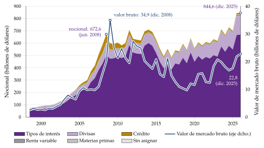
Fuente: BIS, estadísticas semestrales de derivados OTC (Bank for International Settlements, 2026); datos de junio y diciembre de cada año, de 1998 a diciembre de 2025 (consulta: 8/11/2026).
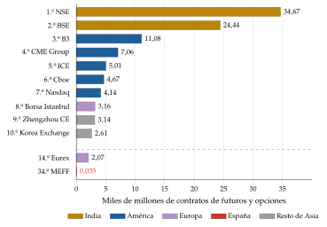
Fuente: FIA, Trends in ETD Trading Q4 2025 (Futures Industry Association, 2026b). Contratos, no importe: un contrato indio vale mucho menos que uno del CME.
III.6.2. Participantes e infraestructura
Usuarios finales, que se cubren, especulan o arbitran (I.4): empresas no financieras que cubren riesgos de cambio, de tipos o de materias primas; gestoras de fondos y aseguradoras, que cubren carteras y ajustan su duración; bancos, que gestionan el riesgo de tipos de su balance; y Tesoros y bancos centrales.
Intermediarios: un puñado de grandes bancos actúan como creadores de mercado (dealers): cotizan precios de compra y de venta, casan las operaciones de los clientes y cubren entre ellos el riesgo neto que les queda. Por eso el mercado OTC está muy concentrado y muy interconectado.
Infraestructuras:
las entidades de contrapartida central, que se interponen entre las partes, compensan las posiciones y piden garantías; reducen el riesgo de contrapartida, pero lo concentran en ellas, que pasan a ser sistémicas (anexo B);
los registros de operaciones (trade repositories), a los que se comunica cada contrato, para que los supervisores vean quién está expuesto a quién;
y, en lo bilateral, el contrato marco de la ISDA, con la compensación por saldos netos en caso de quiebra (close-out netting) y el intercambio de garantías.
En España, los derivados organizados se negocian en MEFF, mercado regulado del grupo BME (propiedad de la suiza SIX desde 2020), y se compensan en BME Clearing, la entidad de contrapartida central; los supervisa la CNMV [ver tema 4.A.20]. En 2025 MEFF negoció algo más de 35 millones de contratos, un 22,6 % más que en 2024, sobre todo opciones sobre acciones (16,3 millones, un 48 % más) y futuros y opciones sobre el IBEX 35 y el Mini IBEX 35.23
III.6.3. La regulación tras 2008
En la cumbre de Pittsburgh de 2009, el G-20 acordó que los derivados OTC normalizados se negociaran en plataformas y se compensaran en entidades de contrapartida central, que todos se comunicaran a registros de operaciones y que los no compensados tuvieran más requisitos de capital. La UE lo aplica con 3 normas [ver tema 3.B.27]:
el EMIR: obligación de compensar en una cámara los derivados que determine la ESMA, de comunicar todos los contratos a un registro y de intercambiar garantías en los no compensados; regula y supervisa las cámaras. Se reformó en 2019 y en 2024 con EMIR 3, que obliga a los grandes usuarios a mantener una cuenta activa en una cámara de la Unión para reducir la dependencia de las de terceros países;
el MiFIR, que obliga a negociar en plataformas los derivados más líquidos;
y el Reglamento de ventas en corto, que prohíbe los CDS soberanos al descubierto y permite a los supervisores prohibir temporalmente las posiciones cortas: la CNMV lo hizo entre marzo y mayo de 2020.24
En Estados Unidos, el título VII de la ley Dodd-Frank (2010) hizo lo mismo con los swaps, bajo la supervisión de la CFTC y de la SEC.
Resultado: el riesgo de contrapartida bilateral ha bajado y la transparencia ha subido, pero las cámaras se han convertido en infraestructuras críticas, «demasiado importantes para quebrar», y sus márgenes pueden ser procíclicos.
III.6.4. Eficiencia y estabilidad
A favor:
Reparten el riesgo: lo trasladan de quien no lo quiere a quien está dispuesto a asumirlo a cambio de una prima, como en la normal backwardation. Las opciones completan los mercados: con suficientes opciones se puede construir cualquier pago contingente, lo que acerca la economía a la asignación eficiente de Arrow (1964) [ver tema 3.A.21].
Revelan información: los futuros y las opciones son a menudo el primer sitio donde se forman los precios, y sus precios dan las expectativas de tipos, inflación, volatilidad o impago que usan los bancos centrales.
Abaratan las transacciones: es más barato cubrirse o tomar posición con un futuro que comprar o vender la cartera.
En contra:
Apalancamiento: con poco capital se toman posiciones enormes, y las pérdidas pueden superar el patrimonio (Archegos en 2021, el WTI en 2020).
Interconexión y opacidad: en lo OTC, nadie sabía en 2008 quién estaba expuesto a quién, y la quiebra de uno podía arrastrar a sus contrapartes (AIG) [ver tema 3.B.26]. La gravedad de la Gran Recesión se debió sobre todo al pánico en los mercados de financiación mayorista y de titulización, más que a la caída de la vivienda en sí.
Prociclicidad: en una crisis suben a la vez la volatilidad y los márgenes, y los usuarios tienen que vender activos para atenderlos, lo que agrava la caída, como ocurrió en marzo de 2020.
Riesgo de modelo: los derivados complejos se valoran con modelos cuyos supuestos fallan justo en las crisis (LTCM en 1998; las CDO en 2007).
Balance: los derivados son neutrales como instrumento; lo que los hace útiles o peligrosos es quién los usa, con cuánto apalancamiento y con cuánta transparencia. La regulación posterior a 2008 ha atacado la opacidad y el riesgo de contrapartida, pero no el apalancamiento ni la concentración del riesgo en las cámaras.
Recapitulación del bloque III: un swap es una cartera de forwards y vale la diferencia entre 2 bonos; los derivados de crédito trasladan el riesgo de impago y fueron centrales en 2008. Los mercados de derivados son enormes en nocional y mucho menores en riesgo neto, están muy concentrados y, desde 2009, mucho más regulados: reparten el riesgo y dan información, pero con apalancamiento y opacidad lo amplifican.
Conclusión
Recapitulación:
A modo de conclusión, las 3 familias de derivados se analizan con el mismo guion y la misma idea: un derivado vale lo que cuesta replicarlo.
El futuro fija hoy el precio de mañana, \(F_0=S_0e^{rT}\).
La opción separa el lado bueno del malo, y su prima sale de una cartera de réplica (paridad put-call, binomial, Black y Scholes), sin depender de las expectativas ni de la aversión al riesgo.
El swap es una cartera de forwards.
Relevancia:
Son el mayor mercado financiero por nocional; con sus precios, los bancos centrales leen lo que el mercado espera de los tipos, de la inflación y de la volatilidad; y están en la gestión de la deuda pública (el Tesoro cubre con swaps sus emisiones en divisas), en la supervisión y en la regulación europea.
Extensiones:
La valoración de opciones se aplica a la inversión real y a la valoración de empresas, con las opciones de esperar, ampliar o abandonar [ver tema 3.A.34] [ver tema 3.B.2] [ver tema 3.B.4]; la ETTI, que está detrás de la valoración de los swaps [ver tema 3.B.24]; el CAPM, que explica la prima entre el futuro y el precio esperado [ver tema 3.B.23]; los mercados de divisas y la paridad cubierta [ver tema 3.B.13]; la crisis de 2008 y la gestión de riesgos [ver tema 3.B.26]; y la regulación financiera [ver tema 3.B.27].
Opinión:
El riesgo no está en el instrumento, sino en el apalancamiento y en la opacidad.
La reforma de 2009 llevó los derivados OTC a cámaras con márgenes, y en abril de 2020 el mercado absorbió un precio negativo del petróleo sin que cayera ninguna cámara.
Pero ahora el riesgo se concentra en esas cámaras, cuyos márgenes, en una crisis, obligan a vender cuando todos venden.
Idea final:
Volviendo al dicho y a la pregunta del principio, los derivados no crean ni destruyen el riesgo: lo cambian de manos y le ponen precio.
Con márgenes, cámaras y transparencia sirven para cubrirse las espaldas; sin ellos, multiplican el riesgo que deberían cubrir.
Por eso el título habla de instrumentos y de mercados.
A. Anexo: bases de la valoración de un derivado. Ausencia de arbitraje, probabilidad neutral al riesgo y Girsanov
A.1. El arbitraje y el teorema fundamental
El arbitraje está ligado al desarrollo de los mercados de derivados y es la base de su valoración. Una oportunidad de arbitraje es una cartera que no cuesta nada, no puede dar pérdidas y da ganancias con probabilidad positiva: en sentido estricto, no tiene riesgo. Surge cuando un activo está mal valorado respecto de otros, y los arbitrajistas operan hasta que la oferta y la demanda devuelven los precios a niveles sin arbitraje.
Teorema fundamental de la valoración de activos: no hay arbitraje si y solo si existe una medida de probabilidad \(\mathbb{Q}\), con los mismos sucesos imposibles que la real, con la que el precio de cada activo descontado al tipo sin riesgo es una martingala (su valor esperado futuro, descontado, es su precio de hoy).
Si además el mercado es completo (todo pago se puede replicar con los activos existentes), \(\mathbb{Q}\) es única y todo derivado tiene un único precio: \[\tag{19} f_0=e^{-rT}\,\mathbb{E}^{\mathbb{Q}}[f_T].\] Las probabilidades neutrales al riesgo son los precios de los títulos de Arrow capitalizados al tipo sin riesgo [ver tema 3.A.21].
A.2. El caso binomial
De las ecuaciones de réplica (10), restando la segunda de la primera, \(\Delta S_0(u-d)=c_u-c_d\), así que \(\Delta=(c_u-c_d)/[(u-d)S_0]\).
Sustituyendo en la primera, \[(1+r)B=\Delta uS_0-c_u=\frac{u(c_u-c_d)-(u-d)\,c_u}{u-d}=\frac{d\,c_u-u\,c_d}{u-d}.\]
El precio es el coste de la cartera: \[c=\Delta S_0-B=\frac{(1+r)(c_u-c_d)-(d\,c_u-u\,c_d)}{(u-d)(1+r)}=\frac{1}{1+r}\left[\frac{(1+r)-d}{u-d}\,c_u+\frac{u-(1+r)}{u-d}\,c_d\right].\]
Los 2 pesos son positivos si \(d<1+r<u\) y suman 1: son probabilidades, \(\pi\) y \(1-\pi\), que es la (11). Con ellas la acción rinde en promedio el tipo sin riesgo, \(\pi uS_0+(1-\pi)dS_0=(1+r)S_0\): son las probabilidades neutrales al riesgo del teorema fundamental. ∎
Del binomial a la lognormal: con \(n\) periodos de duración \(\Delta t=T/n\), \(u=e^{\sigma\sqrt{\Delta t}}\) y \(d=1/u\), \(\ln(S_T/S_0)\) es la suma de \(n\) saltos independientes de \(\pm\sigma\sqrt{\Delta t}\). Por el teorema central del límite, cuando \(n\to\infty\) tiende a una normal con varianza \(\sigma^2T\): el precio final es lognormal y el precio binomial de la opción converge a la fórmula de Black y Scholes.
A.3. La ecuación de Black y Scholes
Si \(dS=\mu S\,dt+\sigma S\,dz\), con \(dz\) el incremento de un proceso de Wiener, el lema de Itô da para el precio \(f(S,t)\) de un derivado: \[df=\left(\frac{\partial f}{\partial t}+\mu S\frac{\partial f}{\partial S}+\frac12\sigma^2S^2\frac{\partial^2f}{\partial S^2}\right)dt+\sigma S\frac{\partial f}{\partial S}\,dz.\]
La cartera \(\Pi=-f+\frac{\partial f}{\partial S}S\) (vender el derivado y comprar \(\partial f/\partial S\) acciones, la delta) cambia en \(d\Pi=-df+\frac{\partial f}{\partial S}dS\). Los términos en \(dz\) y en \(\mu\) se cancelan: \[d\Pi=-\left(\frac{\partial f}{\partial t}+\frac12\sigma^2S^2\frac{\partial^2f}{\partial S^2}\right)dt.\]
Sin riesgo, la cartera tiene que rendir \(r\): \(d\Pi=r\Pi\,dt\). Igualando y reordenando se obtiene la ecuación (12). Como \(\mu\) no aparece, el precio es el mismo para cualquier \(\mu\), en particular para \(\mu=r\): el de un mundo neutral al riesgo. ∎
A.4. El teorema de Girsanov y la fórmula
El teorema de Girsanov justifica ese cambio de mundo. Dice que, al cambiar de medida de probabilidad de forma adecuada, un proceso de Wiener con una tendencia añadida vuelve a ser un proceso de Wiener: la volatilidad no cambia, solo la tendencia.
Con \(dz^{\mathbb{Q}}=dz+\frac{\mu-r}{\sigma}\,dt\), que es un proceso de Wiener con la medida \(\mathbb{Q}\), el precio sigue \(dS=rS\,dt+\sigma S\,dz^{\mathbb{Q}}\).
El cociente \((\mu-r)/\sigma\) es el precio de mercado del riesgo, la ratio de Sharpe del subyacente [ver tema 3.B.23]: cambiar de medida es quitar la prima de riesgo de la tendencia. Por eso \(\sigma\) entra en la fórmula y \(\mu\) no.
Con \(\mathbb{Q}\), \(S_T=S_0\exp\big[(r-\sigma^2/2)T+\sigma\sqrt{T}\,\varepsilon\big]\), con \(\varepsilon\sim N(0,1)\) y densidad \(\phi(\cdot)\) (aquí, \(\varepsilon\) es una normal estándar, no la perturbación del modelo de índice de la renta variable [ver tema 3.B.23]). Entonces:
\(S_T>K\iff\varepsilon>-d_2\), así que \(\mathbb{Q}(S_T>K)=N(d_2)\);
\(\mathbb{E}^{\mathbb{Q}}\big[S_T\mathbf{1}_{\{S_T>K\}}\big]=S_0e^{rT}\int_{-d_2}^{\infty}e^{-\sigma^2T/2+\sigma\sqrt{T}\varepsilon}\phi(\varepsilon)\,d\varepsilon=S_0e^{rT}\int_{-d_2}^{\infty}\phi(\varepsilon-\sigma\sqrt{T})\,d\varepsilon=S_0e^{rT}N(d_1)\), completando el cuadrado y con \(d_1=d_2+\sigma\sqrt{T}\).
Llevándolo a (13), \(c=e^{-rT}\big[S_0e^{rT}N(d_1)-K\,N(d_2)\big]=S_0N(d_1)-Ke^{-rT}N(d_2)\), que es (14). ∎
B. Anexo: funcionamiento y participantes de las cámaras de contrapartida central
Las entidades de contrapartida central (ECC) se interponen en nombre propio en las operaciones de compraventa de instrumentos financieros y se convierten en vendedoras frente a cada comprador y en compradoras frente a cada vendedor. Cuando una operación se registra en una ECC, da lugar a una compra y a una venta, y las 2 tienen a la ECC como contrapartida (figura 1).
Así, la posición abierta de la ECC es nula; si deja de serlo por el incumplimiento de un miembro, tiene que actuar enseguida para volver a la posición neta nula. Pero, al interponerse en todos los contratos, queda expuesta al riesgo de contrapartida con el comprador y con el vendedor originales.25
Compensación: uno de los principales beneficios de la compensación centralizada frente a la bilateral es facilitar el neteo de posiciones. Como la ECC es contraparte de todas las operaciones, las posiciones de signo contrario se netean automáticamente, lo que reduce o elimina la exposición del miembro.26
Miembros y clientes: las ECC son sistemas cerrados que solo operan con sus miembros y, a través de ellos, con sus clientes. Si un miembro negocia con el cliente de otro, en la fase de compensación la ECC se interpone entre los 2 miembros, y el miembro del cliente hace con él una operación espejo (figura 3). Para ser miembro, la ECC exige requisitos de solvencia y de capacidad operativa, para reducir el riesgo de impago.
La cascada ante incumplimientos (default waterfall): si un miembro incumple y su posición da pérdidas, la ECC las cubre por este orden (figura 4):
el margen inicial del incumplidor y su aportación al fondo de garantía: «quien incumple paga», lo que reduce el riesgo moral;
una parte del capital propio de la ECC (skin in the game), que alinea sus incentivos con los de los miembros;
las aportaciones al fondo de garantía de los miembros cumplidores: la mutualización del riesgo, que reduce el apetito por el riesgo de contrapartida;
y, al final, el resto del capital y las herramientas de recuperación de la ECC.
Canales de contagio: si una ECC gestiona mal el incumplimiento de un miembro, o si ella misma incumple, las pérdidas y la escasez de liquidez pueden pasar a los demás miembros, a otras ECC vinculadas, a los mercados que compensa y a los bancos centrales y depositarios de valores con los que opera, y de ahí a otros mercados y zonas monetarias. Por eso EMIR las regula y supervisa, y exige que tengan planes de recuperación y resolución [ver tema 3.B.27].
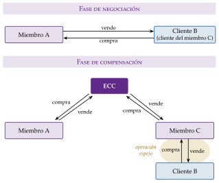
Fuente: elaboración propia a partir de Núñez Ramos y Valdeolivas (2019, 83).
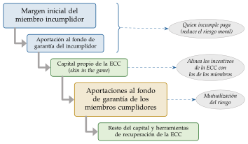
Fuente: elaboración propia a partir de Núñez Ramos y Valdeolivas (2019, 90).
C. Anexo: expectativas, normal backwardation y contango
C.1. La relación con el riesgo sistemático
Un inversor invierte hoy \(F_0e^{-rT}\) al tipo sin riesgo y compra un futuro. En \(T\) tiene \(F_0\), con lo que paga el subyacente, que vale \(S_T\): la estrategia le da el subyacente en \(T\). Su valor actual, descontando el flujo seguro al tipo sin riesgo y el incierto, \(S_T\), a la rentabilidad que se exige al subyacente, \(k\), tiene que ser nulo: \[-F_0e^{-rT}+\mathbb{E}_0[S_T]\,e^{-kT}=0\quad\Longrightarrow\quad F_0=\mathbb{E}_0[S_T]\,e^{(r-k)T}.\]
Con la recta del mercado de títulos, \(k=r+\beta\lambda_M\) [ver tema 3.B.23]:
si \(\beta=0\) (solo riesgo diversificable), \(k=r\) y \(F_0=\mathbb{E}_0[S_T]\): la hipótesis de expectativas;
si \(\beta>0\), \(k>r\) y \(F_0<\mathbb{E}_0[S_T]\): normal backwardation; quien compra el futuro asume un riesgo sistemático, y se le paga con un precio esperado al alza;
si \(\beta<0\), \(k<r\) y \(F_0>\mathbb{E}_0[S_T]\): contango.
Es el enfoque moderno de la prima de los futuros: Dusak (1973) no encontró en los futuros agrícolas de Estados Unidos una prima de riesgo apreciable, coherente con las betas casi nulas de esas materias primas.
C.2. La presión de los coberturistas
Para Keynes (1930) y Hicks (1939), el signo de la prima no lo da la beta, sino quién se cubre: si los productores venden a plazo más de lo que la industria compra, los especuladores tienen que absorber la diferencia comprando, y solo lo hacen con un precio a plazo por debajo del esperado. Con más coberturistas compradores, contango.
C.3. La teoría del almacenamiento
Kaldor (1939) y Working (1949) explican la otra comparación, la del futuro con el precio de hoy, por las existencias. Con existencias abundantes, el rendimiento de conveniencia \(y\) es bajo y \(F_0=S_0e^{(r+u-y)T}>S_0\) (contango en el sentido del mercado); con escasez, tener el producto vale mucho, \(y\) es alto y \(F_0<S_0\) (backwardation en el sentido del mercado). En abril de 2020 los depósitos de petróleo estaban casi llenos y guardar crudo costaba tanto que el futuro más próximo llegó a cotizar en negativo (I.5.1).
C.4. Evidencia
Materias primas: una cartera diversificada de futuros comprados ha dado una prima parecida a la de las acciones, con correlación negativa con ellas, lo que apoya una normal backwardation media; pero producto a producto la prima es pequeña y cambiante, y la pendiente de la curva se explica mejor por las existencias.
Divisas: si se cumpliera la hipótesis de expectativas, el tipo a plazo predeciría sin sesgo el tipo de contado futuro. Al regresar la depreciación sobre el descuento a plazo, el coeficiente sale menor que 1 y a menudo negativo: la divisa con tipos altos tiende a apreciarse, no a depreciarse. Es el sesgo del forward, que se interpreta como una prima de riesgo variable o como expectativas no racionales [ver tema 3.B.13] [ver tema 3.B.14].
Tipos de interés: la misma pregunta, aplicada a los tipos a plazo, es la teoría de las expectativas de la ETTI y su prima por plazo [ver tema 3.B.24].
D. Anexo: estrategias con opciones
Las estrategias del cuerpo (II.4) se completan con estas, cuyos perfiles de beneficio recoge el gráfico 10.
Combinaciones (calls y puts sobre el mismo subyacente y con el mismo vencimiento): apuestas sobre la volatilidad.
Cono (straddle): comprar una call y una put con el mismo \(K\) (en el cuerpo).
Cuna (strangle): lo mismo con una put de \(K\) más bajo que el de la call; es más barata, pero exige un movimiento mayor.
Strap: 2 calls y 1 put con el mismo \(K\); un cono con sesgo alcista, que gana más si el precio sube mucho.
Strip: 1 call y 2 puts; un cono con sesgo bajista.
Venderlas es apostar por la calma: se cobran las primas y se pierde si el precio se mueve mucho.
Diferenciales (opciones del mismo tipo y distinto \(K\)): para expectativas moderadas, limitan la pérdida a cambio de limitar la ganancia.
Alcista (bull spread): comprar una call de \(K_1\) y vender otra de \(K_2>K_1\) (en el cuerpo).
Bajista (bear spread): vender una call de \(K_1\) y comprar otra de \(K_2>K_1\). Se cobra la prima neta (la de la call vendida, más cara, menos la de la comprada) y se gana si el precio no sube; la call comprada pone un techo a la pérdida si sube.
Mariposa (butterfly): comprar una call de \(K_1\) y otra de \(K_3\) y vender 2 de \(K_2\), en medio (el precio que se cree que tendrá el subyacente al vencimiento). Gana si el precio se queda cerca de \(K_2\): es una estrategia neutral, que combina un diferencial alcista y uno bajista.
Sintéticas: una opción combinada con un futuro replica otra opción (tabla 5). Es la misma idea que la paridad put-call (II.5.1): con 3 instrumentos se replica el cuarto.27
| Combinación | Equivale a | |
|---|---|---|
| Comprar futuro + comprar put | \(=\) | Comprar call |
| Vender futuro + vender put | \(=\) | Vender call |
| Vender futuro + comprar call | \(=\) | Comprar put |
| Comprar futuro + vender call | \(=\) | Vender put |
Fuente: elaboración propia. Se comprueba sumando los pagos: \((S_T-K)+\max(K-S_T,0)=\max(S_T-K,0)\).
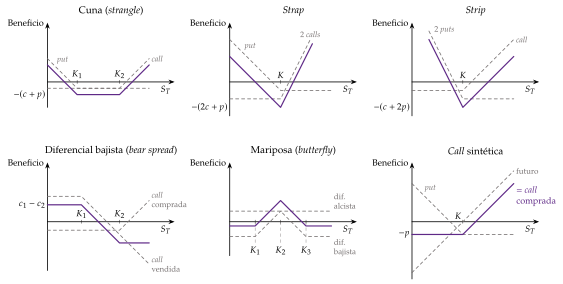
Fuente: elaboración propia a partir de Hull (2022, cap. 12).
E. Anexo: las griegas y la gestión de carteras de opciones
Las griegas miden cómo cambia el valor de una opción (o de una cartera) cuando se mueve una de las variables, dejando las demás fijas. Con la fórmula de Black y Scholes, para una call sin dividendos (gráfico 11):
Delta, \(\Delta=\partial c/\partial S=N(d_1)\), entre 0 y 1 (en la put, \(N(d_1)-1\), entre \(-1\) y 0): cuanto más dentro de dinero, mayor, porque los cambios del subyacente pasan casi enteros a la opción, que se ejercerá. Una cartera con delta nula no se mueve ante cambios pequeños del subyacente; como la delta cambia con \(S\) y con el tiempo, mantenerla exige una cobertura dinámica, ajustando la cartera.
Gamma, \(\Gamma=\partial^2c/\partial S^2=\phi(d_1)/(S\sigma\sqrt{T})>0\): cuánto cambia la delta. Es máxima cerca del dinero y al acercarse el vencimiento; cuanto mayor, más a menudo hay que reajustar la cobertura, y reajustar cuesta.
Vega, \(\mathcal{V}=\partial c/\partial\sigma=S\sqrt{T}\,\phi(d_1)>0\), igual en la call y en la put: más volatilidad, más valor temporal.
Theta, \(\Theta=\partial c/\partial t<0\): lo que pierde la opción cada día que pasa; es mayor en valor absoluto cerca del dinero y tiende a cero muy fuera de dinero, donde no queda nada que perder.
Rho, \(\rho=\partial c/\partial r=KTe^{-rT}N(d_2)>0\) (negativa en la put).
Están ligadas: en una cartera con delta nula, la ecuación (12) se reduce a \(\Theta+\tfrac12\sigma^2S^2\,\Gamma=r\,\Pi\), con \(\Pi\) el valor de la cartera. Quien vende opciones cobra theta y paga gamma: gana si el mercado se mueve poco y pierde si se mueve mucho. Son la base de la gestión de riesgos de las carteras de derivados [ver tema 3.B.26].
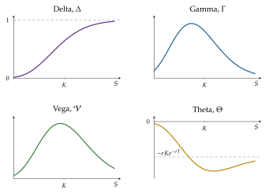
Fuente: elaboración propia con la fórmula de Black y Scholes (1973): \(K=100\), \(r=5\) %, \(\sigma=20\) % y \(T=1\); vega por punto de volatilidad y theta por día.
F. Anexo: para el test
Preguntas tipo test del primer ejercicio: simulador de test.
Bibliografía
Arrow recibió el Premio Nobel de Economía en 1972, con John Hicks, «por sus contribuciones pioneras a la teoría del equilibrio económico general y a la teoría del bienestar».↩︎
No hay que confundir la regulación de los derivados con el impuesto sobre las transacciones financieras, en vigor en España desde enero de 2021: grava al 0,2 % la compra de acciones de sociedades españolas cotizadas con una capitalización de más de 1.000 millones de euros, no los derivados en sí (solo la compra de acciones que resulte de liquidar uno con entrega). En 2025 recaudó 339 millones de euros, un 36,5 % más que en 2024.↩︎
Fischer Black, coautor del modelo, había muerto en 1995, y el Premio Nobel no se concede a título póstumo; la Academia lo recordó al anunciar el de 1997.↩︎
En contabilidad, los derivados se reconocen en el balance por su valor razonable desde que se contratan, con los cambios de valor en la cuenta de resultados salvo que se aplique la contabilidad de coberturas (NIIF 9); el nominal, que no es un activo ni un pasivo, solo aparece en la memoria. En la balanza de pagos se registran solo en la cuenta financiera, en la partida de derivados financieros (distintos de reservas) y opciones de compra de acciones por los empleados, y en términos netos (variación neta de activos menos variación neta de pasivos): no generan rentas primarias, ni siquiera las liquidaciones periódicas de un swap de tipos de interés [ver tema 3.B.11].↩︎
Entre 1634 y 1637 los comerciantes de las Provincias Unidas negociaron contratos a plazo sobre bulbos de tulipán que se entregarían al florecer; los precios se dispararon y se hundieron a principios de 1637. Es el ejemplo clásico de burbuja, aunque Garber (1990) sostiene que buena parte de esos precios se explica por los fundamentos (bulbos raros), y Thompson (2007), porque un cambio legal convirtió de hecho los contratos en opciones. El hundimiento no se debió a una mala cosecha: los bulbos aún no se habían recogido. Un resumen del episodio, en «Tulipomanía» (Wikipedia).↩︎
Por eso un futuro no tiene prima, a diferencia de una opción (II): las 2 partes asumen obligaciones simétricas. \(F_0\) no es el precio del contrato, sino el de la compraventa futura que se pacta, y tampoco es un precio de ejercicio, porque nadie elige si ejerce.↩︎
La definición clásica de futuro financiero era la del artículo 1 del Real Decreto 1814/1991, por el que se regulaban los mercados oficiales de futuros y opciones. Lo derogó en 2010 el Real Decreto 1282/2010; a este, el Real Decreto 1464/2018, y a este, el Real Decreto 814/2023. Ninguna norma vigente repite aquella definición.↩︎
Muchos, como los de índices bursátiles, se liquidan por diferencias porque la entrega sería imposible. Si el tipo de interés no es aleatorio, el precio de un futuro y el de un forward con el mismo vencimiento coinciden; si lo es, difieren por la liquidación diaria.↩︎
Los FRA y los swaps se referían al LIBOR, cuyos paneles dejaron de contribuir a finales de 2021 (en dólares, en junio de 2023); los últimos valores «sintéticos» en dólares se publicaron el 30 de septiembre de 2024. En el euro, los contratos se refieren hoy al Euríbor o al €STR, el tipo a un día que publica el BCE.↩︎
Dicho de otra forma, la rentabilidad bruta de comprar al contado y vender a plazo es \(F_0/S_0\), y es segura: sin arbitraje tiene que ser la del activo sin riesgo, \(e^{rT}\). Si \(F_0/S_0>e^{rT}\), se pide prestado al tipo \(r\) y se hace la operación descrita; si \(F_0/S_0<e^{rT}\), la inversa (reverse cash and carry): se vende en corto el activo, se invierte lo obtenido al tipo \(r\) y se compra a plazo.↩︎
Una opción fuera de dinero no se ejerce: no da un pago negativo, sino ningún pago.↩︎
Es lo que hacían las «cláusulas suelo» de muchas hipotecas españolas a tipo variable: el cliente vendía de hecho un floor al banco, a menudo sin la contrapartida de un techo.↩︎
Son productos apalancados: con un desembolso limitado, la prima, se obtiene el mismo resultado que comprando o vendiendo valores de un precio muy superior, y pequeñas variaciones del subyacente mueven mucho su precio. Una variante para el inversor minorista son los turbo warrants, que se extinguen si el subyacente toca una barrera, con lo que se pierde la prima. La CNMV explica sus riesgos en https://www.
cnmv. y en https://www.es/ portal/ inversor/ Warrants cnmv. .↩︎es/ DocPortal/ Publicaciones/ Fichas/ GR17_ Warrants_ Turbowarrants. pdf Comprar opciones no es mejor ni peor negocio que venderlas. Con pérdidas limitadas y ganancias ilimitadas el comprador parece salir ganando, y con una distribución simétrica del subyacente el vendedor gana más a menudo; pero la probabilidad de ganar no es el valor esperado. Sin arbitraje, ninguna de las 2 posiciones tiene valor positivo una vez descontado con las probabilidades neutrales al riesgo (II.5.3).↩︎
Replicar una put protectora sin comprarla, ajustando sin cesar la proporción entre acciones y liquidez, era el «seguro de carteras» (portfolio insurance) de los años 80. Como obligaba a vender cuando el mercado caía, contribuyó a la caída del 19 de octubre de 1987.↩︎
Es la pregunta 35 del primer ejercicio de marzo de 2026, con el tipo en capitalización simple. Con capitalización continua, \(Ke^{-0{,}05}=99{,}88\) y la paridad exige \(c-p=5{,}12\): la conclusión es la misma.↩︎
Sharpe recibió el Premio Nobel de Economía en 1990, con Harry Markowitz y Merton Miller, «por su trabajo pionero en la teoría de la economía financiera».↩︎
Merton (1973) dio la versión más general (con dividendos, con tipos aleatorios y las cotas de las americanas) y la justificación de la cobertura continua; el nombre de la fórmula quedó para Black y Scholes, cuyo artículo salió en el Journal of Political Economy en 1973.↩︎
Es lo que hizo Archegos Capital Management, una oficina familiar que acumuló con estas permutas, con varios bancos a la vez y sin que ninguno conociera la posición total, exposiciones muy apalancadas a unas pocas acciones. Cuando cayeron, en marzo de 2021, no pudo atender los márgenes, y Credit Suisse perdió unos 5.500 millones de dólares.↩︎
El Reglamento (UE) 236/2012, de ventas en corto, prohíbe las posiciones al descubierto en CDS soberanos, salvo las que cubren riesgos ligados a ese soberano. En Estados Unidos, la ley Dodd-Frank (2010) llevó a compensar en cámara y a negociar en plataformas los CDS y, en general, los derivados normalizados.↩︎
Un swap es, por tanto, una cartera de FRA, que son a su vez forwards sobre un tipo de interés, y no de futuros, que se liquidan a diario en un mercado organizado.↩︎
El CME Group integra el Chicago Board of Trade desde 2007 y el NYMEX y el COMEX desde 2008. Que la NSE de la India sea la primera bolsa de derivados del mundo por contratos lo confirma su nota de prensa; ya lo era en 2019. Por importe negociado, el CME va muy por delante.↩︎
Desde el 1 de enero de 2026, la sociedad rectora de MEFF está integrada por absorción en BME Markets & Exchanges.↩︎
Venta en corto: se vende un activo tomado en préstamo, con la idea de recomprarlo más barato antes de devolverlo; la ganancia es la diferencia entre el precio de venta y el de recompra. Venta en corto al descubierto: se vende un activo que no se tiene ni se ha tomado en préstamo, con la idea de comprarlo más barato antes de entregarlo.↩︎
El riesgo de contrapartida es el de que la contraparte no cumpla sus obligaciones. Frente a una ECC, esas obligaciones son depositar y reponer el margen inicial, depositar el margen de variación y las que resultan de la compra o la venta del subyacente al vencimiento.↩︎
Las ECC facilitan también la compresión de carteras, una técnica por la que 2 o más contrapartes sustituyen sus posiciones por otras de menor nocional y el mismo riesgo de mercado. En la compensación bilateral, en cambio, una entidad puede tener un riesgo de mercado neto pequeño y, a la vez, un riesgo de contrapartida grande con cada una de las entidades con las que ha operado, porque las posiciones con contrapartes distintas no se compensan entre sí.↩︎
Si el precio de ejercicio de la opción coincide con el precio del futuro; si no, el pago sintético difiere del de la opción en una cantidad fija, \(K-F_0\).↩︎